Разбор задачи о шарнирно опёртой балке с «неполным» набором граничных условий
Введение
Одним прекрасным октябрьским днём раздался вопрос из зала от господина Ш.:
Коллеги, столкнулся с совсем банальностью… Хотел посчитать прогиб свободной опёртой балки под вертикальным ускорением. Делал соответственно через beam elements. Накладываю на обоих концах ограничения через Remote displacements: ограничивая перемещения 0, повороты оставляю Free. Использовал прямой решатель с мягкими пружинами. В итоге решатель выдаёт ошибку – матрица жёсткости вырождена, бла-бла-бла, тра-ла-ла… Пробовал через simply supported – та же самая история… Причём на shell’ах, где тоже 6 степеней свободы в узле как бе, с такими же ограничениями как на бимах всё бодренько считает… В Solidworks Simulation без всяких танцев с бубном получаю результат
Что надо делать, мы оперативно обсудили, но вопрос «почему здесь вот так, а здесь не так» остался лежать до лучших времён. Вот эти времена и настали. Начнём с двух оценочных суждений:
На мой взгляд, Solidworks Simulation – это инструмент, предназначенный, в первую очередь, для подпирающего справочником Писаренко собственноручно спроектированный стол конструктора-недоучки, чтобы тот гордо размахивал цветными картинками (не имеющими никакого отношения к делу), верещал «Ну вот, я же посчитал!» (на расчётную схему без слёз не взглянешь) и доводил меня до белого каления. Так как других кейсов использования данного программного продукта мне встречать не доводилось, то на моей технике его не было, нет и не будет, а рассматривать его в дальнейшем будем (не будем) лишь в теоретическом плане.
На мой взгляд, «мягкие пружины» (weak springs) представляют собой «костыль» для тех, кто по тем или иным причинам должным образом не задаёт полный набор граничных условий, а их использование при проведении прочностных расчётов – плохая практика.
А теперь перейдём к основной части и попробуем разобраться, что же считает нам вычислительная машина, каким образом получается тот или иной результат, как устроены «мягкие пружины», ну и, может быть, сделаем какой-нибудь вывод. Изначально предполагалось, что получение ответа на все вопросы займёт совсем немного времени, но обработка некоторых результатов затянулась, я то болел, то пил, то работал, а энтузиазм разбираться со всем этим периодически угасал.
Для большей простоты и наглядности немного упростим задачку и будем рассматривать её в следующей постановке: линейно упругая стальная (модуль упругости \(E=20000~{\text{кгс/мм}}^2\), коэффициент Пуассона \(\mu=0,3\)) балка длиной \(L=600~{\text{мм}}\), поперечное сечение которой – круг радиусом \(R=5~{\text{мм}}\), шарнирно опёрта на торцах и нагружена в центре поперечной силой, равной \(F=1~{\text{кгс}}\). При этом в узлах опирания ограничены только перемещения, а все углы поворота оставлены свободными. Конечноэлементная сетка будет включать в себя целых два балочных элемента.
1. Результаты решения в приличных (не SolidWorks) программных комплексах
1.1 ANSYS
Результат решения задачи в указанной постановке представлены на рисунке 1. Такую задачу программа считать отказалась, любезно предоставив нам сообщение об ошибке с указанием на нехватку ограничений по углу поворота балки вокруг оси балки.
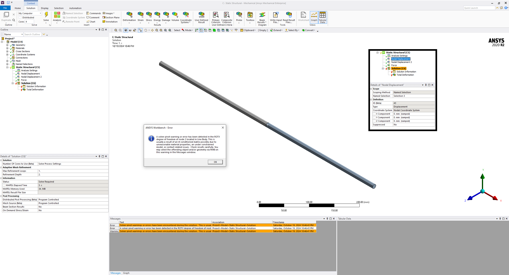
Стоит отметить, что похожий отрицательный результат был ранее получен господином Ш. Почему похожий? Потому что в его постановке дополнительно использовались «мягкие пружины», которых у нас нет. А вот почему они не сработали, мы рассмотрим попозже. А сейчас не будем спорить с машиной, добавим требуемое ограничение на угол поворота \(\theta_x\) вокруг оси балки и получим результат, представленный на рисунке 2: задачка посчиталась, максимальный прогиб в центре балки составил \(0,45961~{\text{мм}}\).
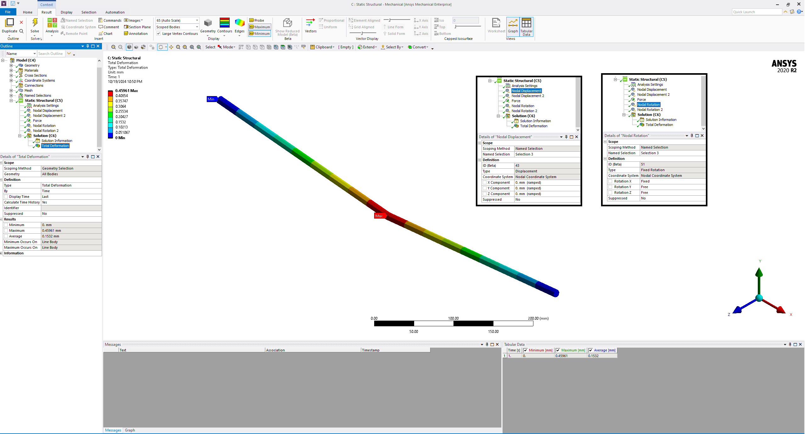
1.2 Simcenter Nastran
Результат решения задачи в исходной постановке представлены на рисунке 3. Тут мы опять видим сообщение о нехватке граничных условий, превращающее нашу балку в механизм. А так как никакие дополнительные параметры решателя типа BAILOUT мы не трогали – результат получился, на мой взгляд, вполне закономерным. Добавим требуемое ограничение на угол поворота \(\theta_x\) вокруг оси балки и получим результат, представленный на рисунке 4: задачка посчиталась, максимальный прогиб в центре балки составил \(0,4586~{\text{мм}}\), весьма похоже на решение, полученное в ANSYS.
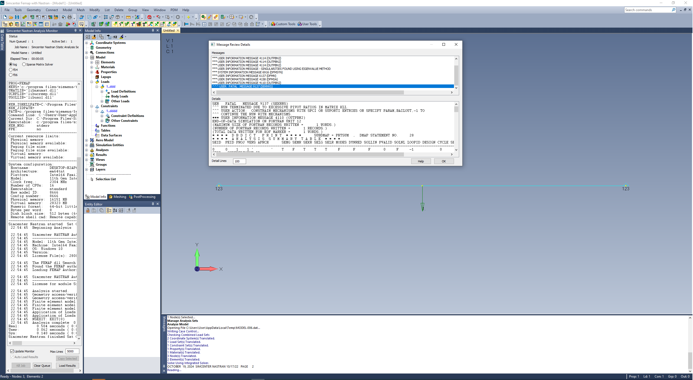
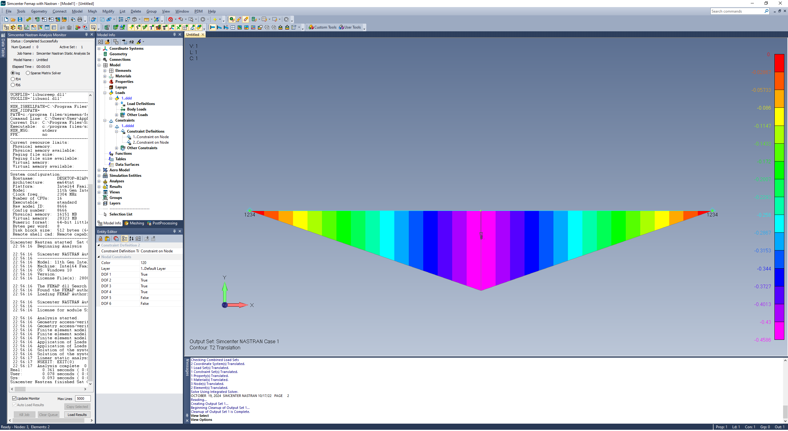
1.3 COMSOL
Результат решения задачи в исходной постановке представлен на рисунке 5. Этот программный комплекс «съел» кинематические граничные условия в виде одних лишь перемещений и спокойно выдал результат – \(0,45837~{\text{мм}}\), что весьма близко к двум предыдущим решениям, требовавшим дополнительное ограничение на угол поворота. Если добавить это ограничение в COMSOL, то результат останется без изменений, поэтому отдельно его приводить не будем.
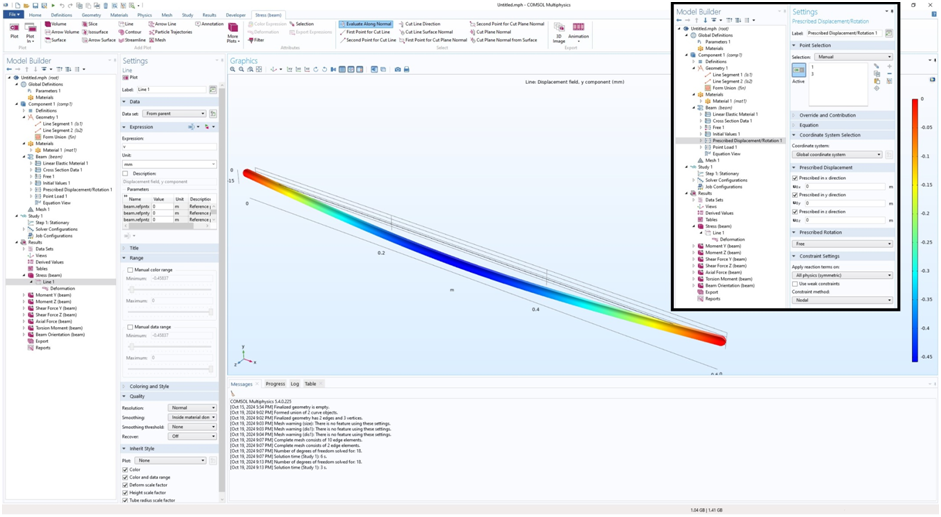
1.4 ABAQUS
Результат решения задачи в исходной постановке представлен на рисунке 6. ABAQUS так же как и COMSOL съел кинематические граничные условия в виде одних лишь перемещений, однако максимальный прогиб в центре балки составил \(0,4277~{\text{мм}}\), что сильно меньше решений, полученных ранее. При добавлении ограничения на угол поворота вокруг оси балки результат остался без изменений, поэтому отдельно приводить его тоже не будем.
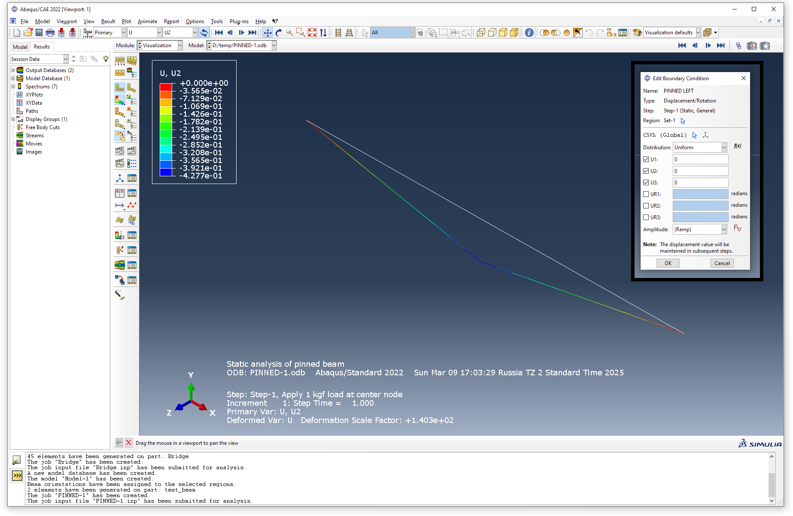
1.5 OptiStruct (Altair Hyperworks)
Результат решения задачи в исходной постановке представлен на рисунке 7. Здесь мы опять получили результат с «неполным» набором кинематических граничных условий – максимальный прогиб в центре равен \(0,4586~{\text{мм}}\).
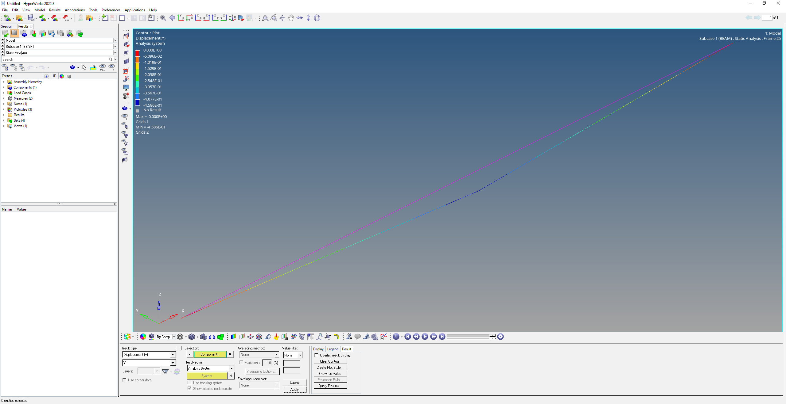
1.6 ЛОГОС
Ну да, Логос, а почему бы и нет. Результат решения задачи в исходной постановке представлен на рисунке 8. Не будем описывать проблемы, возникшие при запуске даже такой незамысловатой задачи, перейдём сразу к числам – максимальный прогиб в центре балки с формально неполным набором кинематических граничных условий получился \(0,458366~{\text{мм}}\).
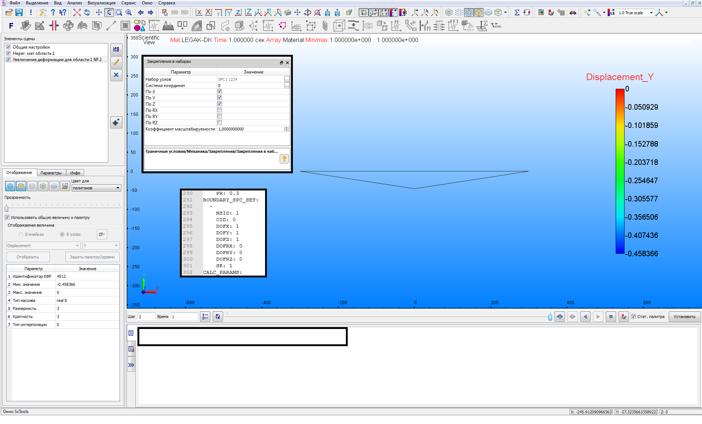
2. Немножко теории
2.1 А что там внутри?
Попробуем покопаться в логах и документации и понять, почему был получен тот или иной результат (если это будет возможно, разумеется). В качестве отправной точки залезем в логи решения задачи в ANSYS, который потребовал ограничений на углы поворота, и увидим, что в нашем случае использовались конечные элементы типа BEAM188. Документация говорит нам, что эти элементы основаны на теории Тимошенко, с линейными функциями формы.
А теперь залезем в документацию COMSOL, который обошёлся ограничениями только на перемещения, и увидим, что в нашем случае использовались конечные элементы, основанный на теории Эйлера-Бернулли (есть опция выбора, но по умолчанию стоит Эйлер), с функциями формы, описываемыми кубическими полиномами.
Взглянем на то, как должны выглядеть матрицы жёсткости этих элементов (без их вывода, пушто мне лениво расписывать). В случае балки Эйлера матрица жёсткости примет следующий вид:
\[ K =\begin{bmatrix} \frac{E \cdot A}{L} & 0 & 0 & 0 & 0 & 0 & -\frac{E \cdot A}{L} & 0 & 0 & 0 & 0 & 0 \\ 0 & \frac{12 \cdot E \cdot I_y}{L^3} & 0 & 0 & 0 & \frac{6 \cdot E \cdot I_y}{L^2} & 0 & -\frac{12 \cdot E \cdot I_y}{L^3} & 0 & 0 & 0 & \frac{6 \cdot E \cdot I_y}{L^2} \\ 0 & 0 & \frac{12 \cdot E \cdot I_z}{L^3} & 0 & -\frac{6 \cdot E \cdot I_z}{L^2} & 0 & 0 & 0 & -\frac{12 \cdot E \cdot I_z}{L^3} & 0 & -\frac{6 \cdot E \cdot I_z}{L^2} & 0 \\ 0 & 0 & 0 & \frac{G \cdot J}{L} & 0 & 0 & 0 & 0 & 0 & -\frac{G \cdot J}{L} & 0 & 0 \\ 0 & 0 & -\frac{6 \cdot E \cdot I_z}{L^2} & 0 & \frac{4 \cdot E \cdot I_z}{L} & 0 & 0 & 0 & \frac{6 \cdot E \cdot I_z}{L^2} & 0 & \frac{2 \cdot E \cdot I_z}{L} & 0 \\ 0 & \frac{6 \cdot E \cdot I_y}{L^2} & 0 & 0 & 0 & \frac{4 \cdot E \cdot I_y}{L} & 0 & -\frac{6 \cdot E \cdot I_y}{L^2} & 0 & 0 & 0 & \frac{2 \cdot E \cdot I_y}{L} \\ -\frac{E \cdot A}{L} & 0 & 0 & 0 & 0 & 0 & \frac{E \cdot A}{L} & 0 & 0 & 0 & 0 & 0 \\ 0 & -\frac{12 \cdot E \cdot I_y}{L^3} & 0 & 0 & 0 & -\frac{6 \cdot E \cdot I_y}{L^2} & 0 & \frac{12 \cdot E \cdot I_y}{L^3} & 0 & 0 & 0 & -\frac{6 \cdot E \cdot I_y}{L^2} \\ 0 & 0 & -\frac{12 \cdot E \cdot I_z}{L^3} & 0 & \frac{6 \cdot E \cdot I_z}{L^2} & 0 & 0 & 0 & \frac{12 \cdot E \cdot I_z}{L^3} & 0 & \frac{6 \cdot E \cdot I_z}{L^2} & 0 \\ 0 & 0 & 0 & -\frac{G \cdot J}{L} & 0 & 0 & 0 & 0 & 0 & \frac{G \cdot J}{L} & 0 & 0 \\ 0 & 0 & -\frac{6 \cdot E \cdot I_z}{L^2} & 0 & \frac{2 \cdot E \cdot I_z}{L} & 0 & 0 & 0 & \frac{6 \cdot E \cdot I_z}{L^2} & 0 & \frac{4 \cdot E \cdot I_z}{L} & 0 \\ 0 & \frac{6 \cdot E \cdot I_y}{L^2} & 0 & 0 & 0 & \frac{2 \cdot E \cdot I_y}{L} & 0 & -\frac{6 \cdot E \cdot I_y}{L^2} & 0 & 0 & 0 & \frac{4 \cdot E \cdot I_y}{L} \end{bmatrix} \]
где \(Е\) – модуль упругости, \(I_y\) и \(I_z\) – моменты инерции поперечного сечения балочного элемента, \(L\) – длина балочного элемента, \(G\) – модуль сдвига, связанный с модулем упругости соотношением \(G = \frac{E}{2 \cdot (1 + \mu)}\), \(A\) - площадь поперечного сечения балочного элемента, \(J\) – момент инерции при кручении.
В случае балки Тимошенко матрица жёсткости примет следующий вид:
\[ K=\begin{bmatrix} \frac{E \cdot A}{L} & 0 & 0 & 0 & 0 & 0 & -\frac{E \cdot A}{L} & 0 & 0 & 0 & 0 & 0 \\ 0 & \frac{12 \cdot E \cdot I_z}{L^3 \cdot (1 + \Phi_z)} & 0 & 0 & 0 & \frac{6 \cdot E \cdot I_z}{L^2 \cdot (1 + \Phi_z)} & 0 & -\frac{12 \cdot E \cdot I_z}{L^3 \cdot (1 + \Phi_z)} & 0 & 0 & 0 & \frac{6 \cdot E \cdot I_z}{L^2 \cdot (1 + \Phi_z)} \\ 0 & 0 & \frac{12 \cdot E \cdot I_y}{L^3 \cdot (1 + \Phi_y)} & 0 & -\frac{6 \cdot E \cdot I_y}{L^2 \cdot (1 + \Phi_y)} & 0 & 0 & 0 & -\frac{12 \cdot E \cdot I_y}{L^3 \cdot (1 + \Phi_y)} & 0 & -\frac{6 \cdot E \cdot I_y}{L^2 \cdot (1 + \Phi_y)} & 0 \\ 0 & 0 & 0 & \frac{G \cdot J}{L} & 0 & 0 & 0 & 0 & 0 & -\frac{G \cdot J}{L} & 0 & 0 \\ 0 & 0 & -\frac{6 \cdot E \cdot I_y}{L^2 \cdot (1 + \Phi_y)} & 0 & \frac{(4 + \Phi_y) \cdot E \cdot I_y}{L \cdot (1 + \Phi_y)} & 0 & 0 & 0 & \frac{6 \cdot E \cdot I_y}{L^2 \cdot (1 + \Phi_y)} & 0 & \frac{(2 - \Phi_y) \cdot E \cdot I_y}{L \cdot (1 + \Phi_y)} & 0 \\ 0 & \frac{6 \cdot E \cdot I_z}{L^2 \cdot (1 + \Phi_z)} & 0 & 0 & 0 & \frac{(4 + \Phi_z) \cdot E \cdot I_z}{L \cdot (1 + \Phi_z)} & 0 & -\frac{6 \cdot E \cdot I_z}{L^2 \cdot (1 + \Phi_z)} & 0 & 0 & 0 & \frac{(2 - \Phi_z) \cdot E \cdot I_z}{L \cdot (1 + \Phi_z)} \\ -\frac{E \cdot A}{L} & 0 & 0 & 0 & 0 & 0 & \frac{E \cdot A}{L} & 0 & 0 & 0 & 0 & 0 \\ 0 & -\frac{12 \cdot E \cdot I_z}{L^3 \cdot (1 + \Phi_z)} & 0 & 0 & 0 & -\frac{6 \cdot E \cdot I_z}{L^2 \cdot (1 + \Phi_z)} & 0 & \frac{12 \cdot E \cdot I_z}{L^3 \cdot (1 + \Phi_z)} & 0 & 0 & 0 & -\frac{6 \cdot E \cdot I_z}{L^2 \cdot (1 + \Phi_z)} \\ 0 & 0 & -\frac{12 \cdot E \cdot I_y}{L^3 \cdot (1 + \Phi_y)} & 0 & \frac{6 \cdot E \cdot I_y}{L^2 \cdot (1 + \Phi_y)} & 0 & 0 & 0 & \frac{12 \cdot E \cdot I_y}{L^3 \cdot (1 + \Phi_y)} & 0 & \frac{6 \cdot E \cdot I_y}{L^2 \cdot (1 + \Phi_y)} & 0 \\ 0 & 0 & 0 & -\frac{G \cdot J}{L} & 0 & 0 & 0 & 0 & 0 & \frac{G \cdot J}{L} & 0 & 0 \\ 0 & 0 & -\frac{6 \cdot E \cdot I_y}{L^2 \cdot (1 + \Phi_y)} & 0 & \frac{(2 - \Phi_y) \cdot E \cdot I_y}{L \cdot (1 + \Phi_y)} & 0 & 0 & 0 & \frac{6 \cdot E \cdot I_y}{L^2 \cdot (1 + \Phi_y)} & 0 & \frac{(4 + \Phi_y) \cdot E \cdot I_y}{L \cdot (1 + \Phi_y)} & 0 \\ 0 & \frac{6 \cdot E \cdot I_z}{L^2 \cdot (1 + \Phi_z)} & 0 & 0 & 0 & \frac{(2 - \Phi_z) \cdot E \cdot I_z}{L \cdot (1 + \Phi_z)} & 0 & -\frac{6 \cdot E \cdot I_z}{L^2 \cdot (1 + \Phi_z)} & 0 & 0 & 0 & \frac{(4 + \Phi_z) \cdot E \cdot I_z}{L \cdot (1 + \Phi_z)} \end{bmatrix} \]
где \(\Phi_z = \frac{12 \cdot E \cdot I_z}{G \cdot A \cdot k \cdot L^2}\label{eq:phi_z}\), \(\Phi_y = \frac{12 \cdot E \cdot I_y}{G \cdot A \cdot k \cdot L^2}\label{eq:phi_y}\), а \(k\) - коэффициент, зависящий от формы поперечного сечения.
Как несложно заметить, структура обеих матриц одинакова и, с точки зрения процедуры дальнейшего решения системы линейных алгебраических уравнений, их можно считать идентичными. Перепишем в общем виде матрицу жёсткости одного конечного элемента:
\[ \mathbf{K} = \begin{bmatrix} K_{1,1} & 0 & 0 & 0 & 0 & 0 & K_{1,7} & 0 & 0 & 0 & 0 & 0 \\ 0 & K_{2,2} & 0 & 0 & 0 & K_{2,6} & 0 & K_{2,8} & 0 & 0 & 0 & K_{2,12} \\ 0 & 0 & K_{3,3} & 0 & K_{3,5} & 0 & 0 & 0 & K_{3,9} & 0 & K_{3,11} & 0 \\ 0 & 0 & 0 & K_{4,4} & 0 & 0 & 0 & 0 & 0 & K_{4,10} & 0 & 0 \\ 0 & 0 & K_{5,3} & 0 & K_{5,5} & 0 & 0 & 0 & K_{5,9} & 0 & K_{5,11} & 0 \\ 0 & K_{6,2} & 0 & 0 & 0 & K_{6,6} & 0 & K_{6,8} & 0 & 0 & 0 & K_{6,12} \\ K_{7,1} & 0 & 0 & 0 & 0 & 0 & K_{7,7} & 0 & 0 & 0 & 0 & 0 \\ 0 & K_{8,2} & 0 & 0 & 0 & K_{8,6} & 0 & K_{8,8} & 0 & 0 & 0 & K_{8,12} \\ 0 & 0 & K_{9,3} & 0 & K_{9,5} & 0 & 0 & 0 & K_{9,9} & 0 & K_{9,11} & 0 \\ 0 & 0 & 0 & K_{10,4} & 0 & 0 & 0 & 0 & 0 & K_{10,10} & 0 & 0 \\ 0 & 0 & K_{11,3} & 0 & K_{11,5} & 0 & 0 & 0 & K_{11,9} & 0 & K_{11,11} & 0 \\ 0 & K_{12,2} & 0 & 0 & 0 & K_{12,6} & 0 & K_{12,8} & 0 & 0 & 0 & K_{12,12} \end{bmatrix} \label{eq:stiffness_matrix} \]
А теперь соберём полную матрицу жёсткости и запишем разрешающее уравнение \(K \cdot u = P\) для нашей модели:
\[ \begin{bmatrix} K1_{1,1} & 0 & 0 & 0 & 0 & 0 & K_{1,7} & 0 & 0 & 0 & 0 & 0 & 0 & 0 & 0 & 0 & 0 & 0 \\ 0 & K1_{2,2} & 0 & 0 & 0 & K1_{2,6} & 0 & K1_{2,8} & 0 & 0 & 0 & K1_{2,12} & 0 & 0 & 0 & 0 & 0 & 0 \\ 0 & 0 & K1_{3,3} & 0 & K1_{3,5} & 0 & 0 & 0 & K1_{3,9} & 0 & K1_{3,11} & 0 & 0 & 0 & 0 & 0 & 0 & 0 \\ 0 & 0 & 0 & K1_{4,4} & 0 & 0 & 0 & 0 & 0 & K1_{4,10} & 0 & 0 & 0 & 0 & 0 & 0 & 0 & 0 \\ 0 & 0 & K1_{5,3} & 0 & K1_{5,5} & 0 & 0 & 0 & K1_{5,9} & 0 & K1_{5,11} & 0 & 0 & 0 & 0 & 0 & 0 & 0 \\ 0 & K1_{6,2} & 0 & 0 & 0 & K1_{6,6} & 0 & K1_{6,8} & 0 & 0 & 0 & K1_{6,12} & 0 & 0 & 0 & 0 & 0 & 0 \\ K1_{7,1} & 0 & 0 & 0 & 0 & 0 & K1_{7,7}+K2_{1,1} & 0 & 0 & 0 & 0 & 0 & K2_{1,7} & 0 & 0 & 0 & 0 & 0 \\ 0 & K1_{8,2} & 0 & 0 & 0 & K1_{8,6} & 0 & K1_{8,8}+K_{2,2} & 0 & 0 & 0 & K1_{8,12}+K2_{2,6} & 0 & K2_{2,8} & 0 & 0 & 0 & K2_{2,12} \\ 0 & 0 & K1_{9,3} & 0 & K1_{9,5} & 0 & 0 & 0 & K1_{9,9}+K2_{3,3} & 0 & K1_{9,11}+K2_{3,5} & 0 & 0 & 0 & K2_{3,9} & 0 & K2_{3,11} & 0 \\ 0 & 0 & 0 & K1_{10,4} & 0 & 0 & 0 & 0 & 0 & K1_{10,10}+K2_{4,4} & 0 & 0 & 0 & 0 & 0 & K2_{4,10} & 0 & 0 \\ 0 & 0 & K1_{11,3} & 0 & K1_{11,5} & 0 & 0 & 0 & K1_{11,9}+K2_{5,3} & 0 & K1_{11,11}+K2_{5,5} & 0 & 0 & 0 & K2_{5,9} & 0 & K2_{5,11} & 0 \\ 0 & K1_{12,2} & 0 & 0 & 0 & K1_{12,6} & 0 & K1_{12,8}+K2_{6,2} & 0 & 0 & 0 & K1_{12,12}+K2_{6,6} & 0 & K2_{6,8} & 0 & 0 & 0 & K2_{6,12} \\ 0 & 0 & 0 & 0 & 0 & 0 & K2_{7,1} & 0 & 0 & 0 & 0 & 0 & K2_{7,7} & 0 & 0 & 0 & 0 & 0 \\ 0 & 0 & 0 & 0 & 0 & 0 & 0 & K2_{8,2} & 0 & 0 & 0 & K2_{8,6} & 0 & K2_{8,8} & 0 & 0 & 0 & K2_{8,12} \\ 0 & 0 & 0 & 0 & 0 & 0 & 0 & 0 & K2_{9,3} & 0 & K2_{9,5} & 0 & 0 & 0 & K2_{9,9} & 0 & K2_{9,11} & 0 \\ 0 & 0 & 0 & 0 & 0 & 0 & 0 & 0 & 0 & K2_{10,4} & 0 & 0 & 0 & 0 & 0 & K2_{10,10} & 0 & 0 \\ 0 & 0 & 0 & 0 & 0 & 0 & 0 & 0 & K2_{11,3} & 0 & K2_{11,5} & 0 & 0 & 0 & K2_{11,9} & 0 & K2_{11,11} & 0 \\ 0 & 0 & 0 & 0 & 0 & 0 & 0 & K2_{12,2} & 0 & 0 & 0 & K2_{12,6} & 0 & K2_{12,8} & 0 & 0 & 0 & K2_{12,12} \end{bmatrix} \cdot \begin{bmatrix} u_1 \\ v_1 \\ w_1 \\ \theta_{x1} \\ \theta_{y1} \\ \theta_{z1} \\ u_2 \\ v_2 \\ w_2 \\ \theta_{x2} \\ \theta_{y2} \\ \theta_{z2} \\ u_3 \\ v_3 \\ w_3 \\ \theta_{x3} \\ \theta_{y3} \\ \theta_{z3} \end{bmatrix} = \begin{bmatrix} 0 \\ 0 \\ 0 \\ 0 \\ 0 \\ 0 \\ 0 \\ -1 \\ 0 \\ 0 \\ 0 \\ 0 \\ 0 \\ 0 \\ 0 \\ 0 \\ 0 \\ 0 \end{bmatrix} \]
Применим к получившейся «модели» граничные условия исходной задачи, т.е. ограничим только перемещения в первом и третьем узле, простым вычёркиванием соответствующих строк и столбцов:
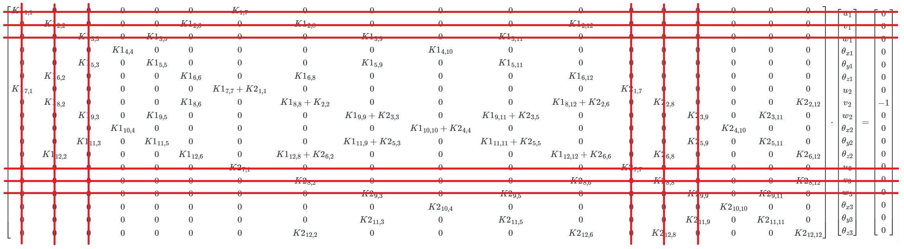
Получаем в «остатке»:
\[ \begin{bmatrix} K1_{4,4} & 0 & 0 & 0 & 0 & 0 & K1_{4,10} & 0 & 0 & 0 & 0 & 0 \\ 0 & K1_{5,5} & 0 & 0 & 0 & K1_{5,9} & 0 & K1_{5,11} & 0 & 0 & 0 & 0 \\ 0 & 0 & K1_{6,6} & 0 & K1_{6,8} & 0 & 0 & 0 & K1_{6,12} & 0 & 0 & 0 \\ 0 & 0 & 0 & K1_{7,7}+K2_{1,1} & 0 & 0 & 0 & 0 & 0 & 0 & 0 & 0 \\ 0 & 0 & K1_{8,6} & 0 & K1_{8,8}+K_{2,2} & 0 & 0 & 0 & K1_{8,12}+K2_{2,6} & 0 & 0 & K2_{2,12} \\ 0 & K1_{9,5} & 0 & 0 & 0 & K1_{9,9}+K2_{3,3} & 0 & K1_{9,11}+K2_{3,5} & 0 & 0 & K2_{3,11} & 0 \\ K1_{10,4} & 0 & 0 & 0 & 0 & 0 & K1_{10,10}+K2_{4,4} & 0 & 0 & K2_{4,10} & 0 & 0 \\ 0 & K1_{11,5} & 0 & 0 & 0 & K1_{11,9}+K2_{5,3} & 0 & K1_{11,11}+K2_{5,5} & 0 & 0 & K2_{5,11} & 0 \\ 0 & 0 & K1_{12,6} & 0 & K1_{12,8}+K2_{6,2} & 0 & 0 & 0 & K1_{12,12}+K2_{6,6} & 0 & 0 & K2_{6,12} \\ 0 & 0 & 0 & 0 & 0 & 0 & K2_{10,4} & 0 & 0 & K2_{10,10} & 0 & 0 \\ 0 & 0 & 0 & 0 & 0 & K2_{11,3} & 0 & K2_{11,5} & 0 & 0 & K2_{11,11} & 0 \\ 0 & 0 & 0 & 0 & K2_{12,2} & 0 & 0 & 0 & K2_{12,6} & 0 & 0 & K2_{12,12} \end{bmatrix} \cdot \begin{bmatrix} \theta_{x1} \\ \theta_{y1} \\ \theta_{z1} \\ u_2 \\ v_2 \\ w_2 \\ \theta_{x2} \\ \theta_{y2} \\ \theta_{z2} \\ \theta_{x3} \\ \theta_{y3} \\ \theta_{z3} \end{bmatrix} = \begin{bmatrix} 0 \\ 0 \\ 0 \\ 0 \\ -1 \\ 0 \\ 0 \\ 0 \\ 0 \\ 0 \\ 0 \\ 0 \end{bmatrix} \]
Несложно убедиться, что определитель оставшейся части исходной матрицы равен нулю, и, соответственно, эта часть матрицы, необходимая для решения уравнения вида \(X = K^{-1} \cdot P\), не очень хочет обращаться, что приводит к невозможности получения результата. Именно такую картину можно было наблюдать при попытке решить исходную задачу (без ограничений на углы поворота) в ANSYS и NASTRAN. Теперь добавим недостающее граничное условие на угол поворота вокруг оси балки, ещё немного вычёркивая строчки и столбцы:
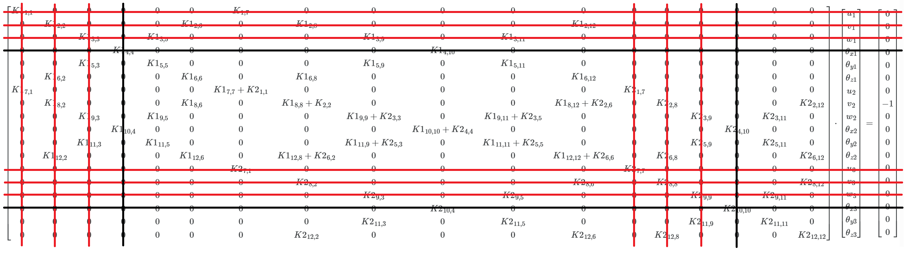
Получаем в «остатке»:
\[ \begin{bmatrix} K1_{5,5} & 0 & 0 & 0 & K1_{5,9} & 0 & K1_{5,11} & 0 & 0 & 0 \\ 0 & K1_{6,6} & 0 & K1_{6,8} & 0 & 0 & 0 & K1_{6,12} & 0 & 0 \\ 0 & 0 & K1_{7,7}+K2_{1,1} & 0 & 0 & 0 & 0 & 0 & 0 & 0 \\ 0 & K1_{8,6} & 0 & K1_{8,8}+K_{2,2} & 0 & 0 & 0 & K1_{8,12}+K2_{2,6} & 0 & K2_{2,12} \\ K1_{9,5} & 0 & 0 & 0 & K1_{9,9}+K2_{3,3} & 0 & K1_{9,11}+K2_{3,5} & 0 & K2_{3,11} & 0 \\ 0 & 0 & 0 & 0 & 0 & K1_{10,10}+K2_{4,4} & 0 & 0 & 0 & 0 \\ K1_{11,5} & 0 & 0 & 0 & K1_{11,9}+K2_{5,3} & 0 & K1_{11,11}+K2_{5,5} & 0 & K2_{5,11} & 0 \\ 0 & K1_{12,6} & 0 & K1_{12,8}+K2_{6,2} & 0 & 0 & 0 & K1_{12,12}+K2_{6,6} & 0 & K2_{6,12} \\ 0 & 0 & 0 & 0 & K2_{11,3} & 0 & K2_{11,5} & 0 & K2_{11,11} & 0 \\ 0 & 0 & 0 & K2_{12,2} & 0 & 0 & 0 & K2_{12,6} & 0 & K2_{12,12} \end{bmatrix} \cdot \begin{bmatrix} \theta_{y1} \\ \theta_{z1} \\ u_2 \\ v_2 \\ w_2 \\ \theta_{x2} \\ \theta_{y2} \\ \theta_{z2} \\ \theta_{y3} \\ \theta_{z3} \end{bmatrix} = \begin{bmatrix} 0 \\ 0 \\ 0 \\ -1 \\ 0 \\ 0 \\ 0 \\ 0 \\ 0 \\ 0 \end{bmatrix} \]
В этом случае определитель оставшейся части исходной матрицы представляет собой положительное число, сам кусочек обращается на изи и можно получить конечное решение. Теперь, когда теоретический базис сформирован, можно приступить к подстановке чисел и получению решений. Реализуем несложный код (базовый, дальше будем его дополнять различными функциями) для случая с ограничением только на перемещения:
import numpy as np
from numpy.typing import NDArray ## Тип для массивов NumPy
from typing import Tuple, List ## Типы для подсказок, что возвращают функции
class BeamStructure:
def __init__(self) -> None:
""" Исходные данные к задаче о шарнирно опёртой балке"""
self.L: float = 600.0 ## Длина, мм
self.L_e: float = self.L / 2 ## Длина элемента, мм
self.E: float = 20000.0 ## Модуль упругости, кгс/мм^2
self.G: float = 7692.31 ## Модуль сдвига, кгс/мм^2
self.A: float = 78.54 ## Площадь поперечного сечения, мм^2
self.Iz: float = 490.874 ## Момент инерции относительно оси z, мм^4
self.Iy: float = 490.874 ## Момент инерции относительно оси y, мм^4
self.J: float = 2 * self.Iz ## Полярный момент инерции, мм^4
self.k: float = 10/9 ## Коэффициент формы
self.F: float = 1.0 ## Сила, кгс
def calculate_phi(self) -> float:
""" Расчёт коэффициента Phi с учётом сдвиговой деформации"""
phi = 12 * self.E * self.Iz / (self.G * self.A * self.k * self.L_e ** 2)
return phi
def calculate_stiffness_coefficients(self, phi: float) -> Tuple[float, ...]:
""" Расчёт коэффициентов жёсткости """
k_ea = self.E * self.A / self.L_e
k_gj = self.G * self.J / self.L_e
k11 = 12 * self.E * self.Iz / (self.L_e**3 * (1 + phi))
k12 = 6 * self.E * self.Iz / (self.L_e**2 * (1+phi))
k22 = (4 + phi) * self.E * self.Iz / (self.L_e * (1 + phi))
k24 = (2 - phi) * self.E * self.Iz / (self.L_e * (1 + phi))
return k_ea, k_gj, k11, k12, k22, k24
def build_local_stiffness_matrix(self, k_ea: float, k_gj: float, k11: float,
k12: float, k22: float, k24: float) -> NDArray:
""" Построение локальной матрицы жёсткости 12х12 """
## Создание пустой матрицы 12х12 (12 степеней свободы, 6 на каждом конце)
ke = np.zeros((12,12))
## Заполнение ненулевых элементов
## Растяжение вдоль оси балки (вдоль оси х)
ke[0, 0] = k_ea; ke[0, 6] = -k_ea; ke[6, 0] = -k_ea; ke[6, 6] = k_ea
## Изгиб в плоскости y (перемещения и повороты)
ke[1, 1] = k11; ke[1, 5] = k12; ke[1, 7] = -k11; ke[1, 11] = k12
ke[5, 1] = k12; ke[5, 5] = k22; ke[5, 7] = -k12; ke[5, 11] = k24
ke[7, 1] = -k11; ke[7, 5] = -k12; ke[7, 7] = k11; ke[7, 11] = -k12
ke[11, 1] = k12; ke[11, 5] = k24; ke[11, 7] = -k12; ke[11, 11] = k22
## Изгиб в плоскости z (перемещения и повороты)
ke[2, 2] = k11; ke[2, 4] = -k12; ke[2, 8] = -k11; ke[2, 10] = -k12
ke[4, 2] = -k12; ke[4, 4] = k22; ke[4, 8] = k12; ke[4, 10] = k24
ke[8, 2] = -k11; ke[8, 4] = k12; ke[8, 8] = k11; ke[8, 10] = k12
ke[10, 2] = -k12; ke[10, 4] = k24; ke[10, 8] = k12; ke[10, 10] = k22
## Кручение балки вокруг оси х
ke[3, 3] = k_gj; ke[3, 9] = -k_gj; ke[9, 3] = -k_gj; ke[9, 9] = k_gj
return ke
def assemble_global_matrix(self, ke: NDArray) -> NDArray:
""" Сборка глобальной матрицы жёсткости 18х18 """
## Создание пустой матрицы 18х18 (18 степеней свободы, 6 в каждом узле)
k_global = np.zeros((18, 18))
## Добавление первого элемента (первые 12 строк и столбцов)
k_global[0:12, 0:12] += ke
## Добавление второго элемента (последние 12 строк и столбцов)
k_global[6:18, 6:18] += ke
return k_global
def apply_boundary_conditions(self) -> Tuple[List[int], NDArray]:
""" Применение граничных условий и определение свободных dofs """
## Шарнирные опоры в 1 и 3 узлах
## (0 - u1x, 1 - u1y, 2 - u1z, 3 - theta1x, 12 - u3x, 13 - u3y, 14 - u3z, 15 - theta3z)
#fixed_dofs = [0, 1, 2, 3, 12, 13, 14, 15]
fixed_dofs = [0, 1, 2, 12, 13, 14]
## Свободные степени свободы (всё, что не закреплено)
free_dofs = [i for i in range(18) if i not in fixed_dofs]
## Вектор нагрузок (18 нулей, сила только по индексу 7 - u2y)
f_full = np.zeros(18)
f_full[7] = self.F ## Приложенная сила F2y
return free_dofs, f_full
def solve_system(self, k_global: NDArray, free_dofs: List[int],
f_full: NDArray) -> Tuple[NDArray, float, NDArray, float]:
""" Решение системы уравнений для перемещенеий """
## Оставляем только "свободные части" матрицы жёсткости и вектора нагрузок
k_red = k_global[np.ix_(free_dofs, free_dofs)]
f_red = f_full[free_dofs]
## Решаем систему: K * u = F, где u - вектор перемещений
## Используем функцию из билиотеки NumPy
u_red_np = None
try:
u_red_np = np.linalg.solve(k_red, f_red)
except ValueError as e:
print(f"np.linalg.solve: система вырожденная - {e}")
return u_red_np
def main() -> None:
""" Основная функция """
beam = BeamStructure()
## Вывод исходный данных
print(f"E = {beam.E:.2e} кгс/мм^2, G = {beam.G:.2e} кгс/мм^2, "
f"A = {beam.A:.2e} мм^2, Iz = {beam.Iz:.2e} мм^4, "
f"J = {beam.J:.2e} мм^4, L_e = {beam.L_e:.2e} мм")
## Расчёт промежуточных величин
phi = beam.calculate_phi()
print(f"Phi = {phi:.4f}")
k_ea, k_gj, k11, k12, k22, k24 = beam.calculate_stiffness_coefficients(phi)
print(f"k11 = {k11:.2e}, k12 = {k12:.2e}, k22 = {k22:.2e}, "
f"k24 = {k24:.2e}")
print(f"k_ea = {k_ea:.2e}, k_gj = {k_gj:.2e}")
# Построение матриц
ke = beam.build_local_stiffness_matrix(k_ea, k_gj, k11, k12, k22, k24)
k_global = beam.assemble_global_matrix(ke)
# Вывод матрицы
np.set_printoptions(precision=3)
print("Полная матрица жесткости:")
print(k_global)
# Граничные условия и решение
free_dofs, f_full = beam.apply_boundary_conditions()
print(f"Свободные степени свободы: {free_dofs}")
print(f"Вектор сил: {f_full}")
k_red = k_global[np.ix_(free_dofs, free_dofs)]
print(f"Детерминант K_red = {np.linalg.det(k_red):.2e}")
## Решаем и выводим результат
u_red_np = beam.solve_system(k_global, free_dofs, f_full)
if u_red_np is not None:
print(f"Перемещения (NumPy): {u_red_np}")
print(f"Прогиб в точке u_2y (NumPy): {u_red_np[free_dofs.index(7)]:.4f} мм")
else:
print(f"Перемещения (NumPy) не удалось вычислить из-за вырожденности")
if __name__ == "__main__":
main()Результатом его выполнения будет следующее сообщение:
E = 2.00e+04 кгс/мм^2, G = 7.69e+03 кгс/мм^2, A = 7.85e+01 мм^2, Iz = 4.91e+02 мм^4, J = 9.82e+02 мм^4, L_e = 3.00e+02 мм
Phi = 0.0019
k11 = 4.35e+00, k12 = 6.53e+02, k22 = 1.31e+05, k24 = 6.53e+04
k_ea = 5.24e+03, k_gj = 2.52e+04
Полная матрица жесткости:
[[ 5.236e+03 0.000e+00 0.000e+00 0.000e+00 0.000e+00 0.000e+00
-5.236e+03 0.000e+00 0.000e+00 0.000e+00 0.000e+00 0.000e+00
0.000e+00 0.000e+00 0.000e+00 0.000e+00 0.000e+00 0.000e+00]
[ 0.000e+00 4.355e+00 0.000e+00 0.000e+00 0.000e+00 6.532e+02
0.000e+00 -4.355e+00 0.000e+00 0.000e+00 0.000e+00 6.532e+02
0.000e+00 0.000e+00 0.000e+00 0.000e+00 0.000e+00 0.000e+00]
[ 0.000e+00 0.000e+00 4.355e+00 0.000e+00 -6.532e+02 0.000e+00
0.000e+00 0.000e+00 -4.355e+00 0.000e+00 -6.532e+02 0.000e+00
0.000e+00 0.000e+00 0.000e+00 0.000e+00 0.000e+00 0.000e+00]
[ 0.000e+00 0.000e+00 0.000e+00 2.517e+04 0.000e+00 0.000e+00
0.000e+00 0.000e+00 0.000e+00 -2.517e+04 0.000e+00 0.000e+00
0.000e+00 0.000e+00 0.000e+00 0.000e+00 0.000e+00 0.000e+00]
[ 0.000e+00 0.000e+00 -6.532e+02 0.000e+00 1.307e+05 0.000e+00
0.000e+00 0.000e+00 6.532e+02 0.000e+00 6.526e+04 0.000e+00
0.000e+00 0.000e+00 0.000e+00 0.000e+00 0.000e+00 0.000e+00]
[ 0.000e+00 6.532e+02 0.000e+00 0.000e+00 0.000e+00 1.307e+05
0.000e+00 -6.532e+02 0.000e+00 0.000e+00 0.000e+00 6.526e+04
0.000e+00 0.000e+00 0.000e+00 0.000e+00 0.000e+00 0.000e+00]
[-5.236e+03 0.000e+00 0.000e+00 0.000e+00 0.000e+00 0.000e+00
1.047e+04 0.000e+00 0.000e+00 0.000e+00 0.000e+00 0.000e+00
-5.236e+03 0.000e+00 0.000e+00 0.000e+00 0.000e+00 0.000e+00]
[ 0.000e+00 -4.355e+00 0.000e+00 0.000e+00 0.000e+00 -6.532e+02
0.000e+00 8.710e+00 0.000e+00 0.000e+00 0.000e+00 0.000e+00
0.000e+00 -4.355e+00 0.000e+00 0.000e+00 0.000e+00 6.532e+02]
[ 0.000e+00 0.000e+00 -4.355e+00 0.000e+00 6.532e+02 0.000e+00
0.000e+00 0.000e+00 8.710e+00 0.000e+00 0.000e+00 0.000e+00
0.000e+00 0.000e+00 -4.355e+00 0.000e+00 -6.532e+02 0.000e+00]
[ 0.000e+00 0.000e+00 0.000e+00 -2.517e+04 0.000e+00 0.000e+00
0.000e+00 0.000e+00 0.000e+00 5.035e+04 0.000e+00 0.000e+00
0.000e+00 0.000e+00 0.000e+00 -2.517e+04 0.000e+00 0.000e+00]
[ 0.000e+00 0.000e+00 -6.532e+02 0.000e+00 6.526e+04 0.000e+00
0.000e+00 0.000e+00 0.000e+00 0.000e+00 2.614e+05 0.000e+00
0.000e+00 0.000e+00 6.532e+02 0.000e+00 6.526e+04 0.000e+00]
[ 0.000e+00 6.532e+02 0.000e+00 0.000e+00 0.000e+00 6.526e+04
0.000e+00 0.000e+00 0.000e+00 0.000e+00 0.000e+00 2.614e+05
0.000e+00 -6.532e+02 0.000e+00 0.000e+00 0.000e+00 6.526e+04]
[ 0.000e+00 0.000e+00 0.000e+00 0.000e+00 0.000e+00 0.000e+00
-5.236e+03 0.000e+00 0.000e+00 0.000e+00 0.000e+00 0.000e+00
5.236e+03 0.000e+00 0.000e+00 0.000e+00 0.000e+00 0.000e+00]
[ 0.000e+00 0.000e+00 0.000e+00 0.000e+00 0.000e+00 0.000e+00
0.000e+00 -4.355e+00 0.000e+00 0.000e+00 0.000e+00 -6.532e+02
0.000e+00 4.355e+00 0.000e+00 0.000e+00 0.000e+00 -6.532e+02]
[ 0.000e+00 0.000e+00 0.000e+00 0.000e+00 0.000e+00 0.000e+00
0.000e+00 0.000e+00 -4.355e+00 0.000e+00 6.532e+02 0.000e+00
0.000e+00 0.000e+00 4.355e+00 0.000e+00 6.532e+02 0.000e+00]
[ 0.000e+00 0.000e+00 0.000e+00 0.000e+00 0.000e+00 0.000e+00
0.000e+00 0.000e+00 0.000e+00 -2.517e+04 0.000e+00 0.000e+00
0.000e+00 0.000e+00 0.000e+00 2.517e+04 0.000e+00 0.000e+00]
[ 0.000e+00 0.000e+00 0.000e+00 0.000e+00 0.000e+00 0.000e+00
0.000e+00 0.000e+00 -6.532e+02 0.000e+00 6.526e+04 0.000e+00
0.000e+00 0.000e+00 6.532e+02 0.000e+00 1.307e+05 0.000e+00]
[ 0.000e+00 0.000e+00 0.000e+00 0.000e+00 0.000e+00 0.000e+00
0.000e+00 6.532e+02 0.000e+00 0.000e+00 0.000e+00 6.526e+04
0.000e+00 -6.532e+02 0.000e+00 0.000e+00 0.000e+00 1.307e+05]]
Свободные степени свободы: [3, 4, 5, 6, 7, 8, 9, 10, 11, 15, 16, 17]
Вектор сил: [0. 0. 0. 0. 0. 0. 0. 1. 0. 0. 0. 0. 0. 0. 0. 0. 0. 0.]
Детерминант K_red = 0.00e+00
np.linalg.solve: система вырожденная - Singular matrix
Перемещения (NumPy) не удалось вычислить из-за вырожденностиТеперь добавим ограничение на угол поворота θx вдоль оси балки (и заодно закомментируем вывод матрицы жёсткости, чтобы не мешалась)
## Шарнирные опоры в 1 и 3 узлах
## (0 - u1x, 1 - u1y, 2 - u1z, 3 - theta1x, 12 - u3x, 13 - u3y, 14 - u3z, 15 - theta3z)
fixed_dofs = [0, 1, 2, 3, 12, 13, 14, 15]
#fixed_dofs = [0, 1, 2, 12, 13, 14]Результатом выполнения такого кода будет уже знакомая нам величина прогиба:
E = 2.00e+04 кгс/мм^2, G = 7.69e+03 кгс/мм^2, A = 7.85e+01 мм^2, Iz = 4.91e+02 мм^4, J = 9.82e+02 мм^4, L_e = 3.00e+02 мм
Phi = 0.0019
k11 = 4.35e+00, k12 = 6.53e+02, k22 = 1.31e+05, k24 = 6.53e+04
k_ea = 5.24e+03, k_gj = 2.52e+04
Свободные степени свободы: [4, 5, 6, 7, 8, 9, 10, 11, 16, 17]
Вектор сил: [0. 0. 0. 0. 0. 0. 0. 1. 0. 0. 0. 0. 0. 0. 0. 0. 0. 0.]
Детерминант K_red = 2.82e+40
Перемещения (NumPy): [ 0.00000000e+00 2.29183049e-03 0.00000000e+00 4.58589551e-01
-0.00000000e+00 0.00000000e+00 0.00000000e+00 8.49677854e-20
0.00000000e+00 -2.29183049e-03]
Прогиб в точке u_2y (NumPy): 0.4586 ммТут можно заметить, что решение нашей задачи с использованием функции np.linalg.solve из библиотеки NumPy является таким же «прозрачным», как и решение с помощью остального ПО. Попробуем разобраться, какие процедуры происходят при работе этой функции. Классическим методом решения системы \(K \cdot x = f\) является метод Гаусса, при котором матрица \(K\) с помощью элементарных операций (перестановки строк, умножения и вычитания) превращается в верхнетреугольную (с нулями под диагональю). Чтобы в процессе избежать деления на маленькие числа можно выбрать самый большой по модулю элемент в столбце как ведущий (при этом ведущий элемент лежит на главной диагонали или ниже). Рассмотрим простой пример в виде совместимой системы (вектор \(f\) можно представить как линейную комбинацию столбцов \(K\)) с вырожденной (пушто третья строка является суммой первых двух) матрицей:
\[ \begin{bmatrix} 1 & 2 & 3 \\ 4 & 5 & 6 \\ 5 & 7 & 9 \end{bmatrix} \cdot x= \begin{bmatrix} 1 \\ 2 \\ 3 \end{bmatrix} \]
Максимальный элемент в первом столбце равен 5 и содержащая эту величину строка отправляется на первое место:
\[ \begin{bmatrix} 5 & 7 & 9 \\ 4 & 5 & 6 \\ 1 & 2 & 3 \end{bmatrix} \cdot x= \begin{bmatrix} 3 \\ 2 \\ 1 \end{bmatrix} \]
Теперь разделим первую строку на 5, чтобы элемент (1,1) стал равен единице:
\[ \begin{bmatrix} 1 & 1,4 & 1,8 \\ 4 & 5 & 6 \\ 1 & 2 & 3 \end{bmatrix} \cdot x= \begin{bmatrix} 0,6 \\ 2 \\ 1 \end{bmatrix} \]
Повычитаем из второй и третьей строк первую строку в нужно количестве таким образом, чтобы в столбце под единичкой получились нули (очевидно, что из второй строки нужно вычесть 4 первых, а из третьей строки – одну первую):
\[ \begin{bmatrix} 1 & 1,4 & 1,8 \\ 0 & -0,6 & -1,2 \\ 0 & 0,6 & 1,2 \end{bmatrix} \cdot x= \begin{bmatrix} 0,6 \\ -0,4 \\ 0,4 \end{bmatrix} \]
Переходим ко второму столбцу: максимальное значение по модулю равно 1,4, но оно уже находится сверху, поэтому придётся брать следующее значение, равное -0,6. Делим на него вторую строку, получаем:
\[ \begin{bmatrix} 1 & 1,4 & 1,8 \\ 0 & 1 & 2 \\ 0 & 0,6 & 1,2 \end{bmatrix} \cdot x= \begin{bmatrix} 0,6 \\ 0,667 \\ 0,4 \end{bmatrix} \]
А теперь из последней строки вычтем вторую строку в количестве 0,6 штук:
\[ \begin{bmatrix} 1 & 1,4 & 1,8 \\ 0 & 1 & 2 \\ 0 & 0 & 0 \end{bmatrix} \cdot x= \begin{bmatrix} 0,6 \\ 0,667 \\ 0 \end{bmatrix} \]
Переходя к последнему столбцу, замечаем, что ведущий элемент равен 0, делить на него строку мы не можем и радостно вываливаемся из решения. Отметим, что формально система имеет бесконечное количество решений, которые в общем виде можно записать как:
\[ x= \begin{bmatrix} -0,333+t \\ 0,667-2 \cdot t \\ t \end{bmatrix} \]
Реализуем рассмотренный подход в задаче о шарнирно опёртой балке. Соответствующая функция будет выглядеть следующим образом:
def my_solve(A: np.ndarray, b: np.ndarray) -> np.ndarray:
"""
Решение системы уравнений А * х = b методом Гаусса с частичным выбором ведущего элемента
Args:
A(np.ndarray): Квадратная матрица (n x n)
b(np.ndarray): Вектор правой части (n)
Returns:
np.ndarray: Вектор решения х (n)
Raises:
ValueError: Если матрица не квадратная или вырожденная (детерминант ≈ 0)
"""
## Размер системы - число уравнений (и переменных)
n = len(b)
## Проверяем, что матрица квадратная и соответствует вектору b
if A.shape != (n, n):
raise ValueError("Матрица А должна быть квадратной и соответствовать b!")
## Копируем А и b, чтобы не менять оригиналы (работаем с копиями)
A = A.copy()
b = b.copy()
## Прямой ход: превращаем А в верхнетреугольную матрицу (нули под диагональю)
for i in range(n):
## Ищем ведущий элемент (pivot) - самый большой по модулю в столбце i...
max_idx = i ## ...начинаем с текущей строки...
for k in range(i+1, n): ## ...и смотрим все строки ниже
if abs(A[k, i]) > abs(A[max_idx, i]):
max_idx = k ## Запоминаем строку с максимальным элементом
## Проверяем, не слишком ли маленький pivot (если ≈ 0, матрица вырожденная)
pivot = A[max_idx, i]
if abs(pivot) < 1e-10: ## 1e-10 — порог для учёта ошибок округления
raise ValueError(f"Матрица вырожденна на шаге {i}!")
## Если нашли больший элемент ниже, меняем строки местами
if max_idx != i:
A[[i, max_idx]] = A[[max_idx, i]] ## Меняем строки в матрице A
b[i], b[max_idx] = b[max_idx], b[i] ## Меняем элементы в векторе b
## Делаем ведущий элемент равным 1: делим строку i на pivot
A[i, :] = A[i, :] / pivot
b[i] = b[i] / pivot
## Убираем элементы под ведущим элементом (делаем нули в столбце i)
for j in range(i + 1, n): ## Проходим по строкам ниже текущей
factor = A[j, i] ## Коэффициент, на который умножаем строку i
A[j, :] = A[j, :] - factor * A[i, :] ## Вычитаем, чтобы обнулить A[j, i]
b[j] = b[j] - factor * b[i] ## То же для правой части
## Обратный ход: решаем систему снизу вверх, начиная с последнего уравнения
x = np.zeros(n) ## Создаём вектор для хранения решения
for i in range(n-1, -1, -1): ## Идём от последней строки к первой
x[i] = b[i] ## Берём правую часть текущего уравнения
# Вычитаем все уже найденные переменные (x[j] для j > i)
for j in range(i+1, n):
x[i] = x[i] - A[i, j] * x[j] ## Учитываем влияние верхних элементов
return xРезультат решения задачи с помощью этой функции будет аналогичен предыдущему – максимальный прогиб \(0,4586~{\text{мм}}\) при полном наборе кинематических граничных условий (с учётом угла поворота \(\theta_x\)) и сообщение об ошибке при неполном наборе граничных условий.
Покопавшись в доксах, можно предположить, что встроенная в NumPy функция реализует PLU-разложение, при котором матрица \(K\) «разбивается» на три части так, что \(P \cdot K = L \cdot U\), где \(P\) – матрица перестановок (показывающая, как менять строки), \(L\) – нижняя треугольная матрица с единицами на главной диагонали, \(U\) – верхняя треугольная матрица общего вида. После «разбиения» система решается в два шага: прямой ход \(L \cdot y = P \cdot f\) и обратный ход \(U \cdot x = y\). Рассмотрим тот же простой пример с вырожденной матрицей:
\[ \begin{bmatrix} 1 & 2 & 3 \\ 4 & 5 & 6 \\ 5 & 7 & 9 \end{bmatrix} \cdot x= \begin{bmatrix} 1 \\ 2 \\ 3 \end{bmatrix} \]
Максимальное значение в первом столбце равно 5 и соответствует третьей строке. Таким образом, в рамках алгоритма необходимо отправить третью строку на первое место, первую строку – на третье, а вторую оставить на месте. Матрица \(Р\) примет следующий вид:
\[ P= \begin{bmatrix} 0 & 0 & 1 \\ 0 & 1 & 0 \\ 1 & 0 & 0 \end{bmatrix} \]
А произведение \(P \cdot K\):
\[ P \cdot K = \begin{bmatrix} 5 & 7 & 9 \\ 4 & 5 & 6 \\ 1 & 2 & 3 \end{bmatrix} \]
Обнуляем элементы под пятёркой, для чего вычитаем 0,8 первых строк из второй, и 0,2 первых строк из третьей:
\[ \begin{bmatrix} 5 & 7 & 9 \\ 0 & -0,6 & -1,2 \\ 0 & 0,6 & 1,2 \end{bmatrix} \]
Теперь обнуляем элементы под -0,6, для чего вычитаем -1 вторых строк из третьей, получим:
\[ U= \begin{bmatrix} 5 & 7 & 9 \\ 0 & -0,6 & -1,2 \\ 0 & 0 & 0 \end{bmatrix} \]
А матрица, куда отправляются коэффициенты вычитания, принимает вид:
\[ L= \begin{bmatrix} 1 & 0 & 0 \\ 0,8 & 1 & 0 \\ 0,2 & -1 & 1 \end{bmatrix} \]
Нужные треугольные матрицы сформированы, матрица перестановок тоже, решаем \(L \cdot y = P \cdot f\):
\[ \begin{bmatrix} 1 & 0 & 0 \\ 0,8 & 1 & 0 \\ 0,2 & -1 & 1 \end{bmatrix} \cdot \begin{bmatrix} y_1 \\ y_2 \\ y_3 \end{bmatrix} = \begin{bmatrix} 3 \\ 2 \\ 1 \end{bmatrix} \]
Получаем:
\[ y= \begin{bmatrix} 3 \\ -0,4 \\ 0 \end{bmatrix} \]
Решаем \(U \cdot x = y\):
\[ \begin{bmatrix} 5 & 7 & 9 \\ 0 & -0,6 & -1,2 \\ 0 & 0 & 0 \end{bmatrix} \cdot \begin{bmatrix} x_1 \\ x_2 \\ x_3 \end{bmatrix} = \begin{bmatrix} 3 \\ -0,4 \\ 0 \end{bmatrix} \]
Здесь так же, как и в предыдущем варианте, ведущий элемент в третьем столбце равен нулю, а решение уравнения:
\[ 0 \cdot x_3 = 0 \]
приводит к делению на ноль и неудаче в решении системы. При этом формально система всё ещё имеет бесконечное количество решений.
Реализуем рассмотренный подход в задаче о шарнирно опёртой балке. Нужные для этого функции будут выглядеть следующим образом:
def plu_decomposition(A: np.ndarray) -> Tuple[np.ndarray, np.ndarray, np.ndarray]:
"""
Выполняет PLU-разложение матрицы A на P (перестановки), L (нижнетреугольная), U (верхнетреугольная).
Args:
A (np.ndarray): Квадратная матрица (n x n).
Returns:
Tuple[np.ndarray, np.ndarray, np.ndarray]: Матрицы P, L, U.
Raises:
ValueError: Если матрица не квадратная.
"""
n = A.shape[0]
if A.shape[0] != A.shape[1]:
raise ValueError("Матрица должна быть квадратной!")
## Копируем А
A = A.copy()
## Инициализируем P (единичная матрица), L и U
P = np.eye(n) ## Матрица перестановок начинается как единичная
L = np.zeros((n, n))
U = np.zeros((n, n))
np.fill_diagonal(L, 1) # Единицы на диагонали L
# Разложение с перестановками
for i in range(n):
# Ищем максимальный элемент в столбце i от i до конца
max_idx = i
for k in range(i + 1, n):
if abs(A[k, i]) > abs(A[max_idx, i]):
max_idx = k
# Если нужно, меняем строки в A и P
if max_idx != i:
A[[i, max_idx]] = A[[max_idx, i]]
P[[i, max_idx]] = P[[max_idx, i]]
# Исправляем L: меняем строки до i (кроме диагонали)
if i > 0:
L[[i, max_idx], :i] = L[[max_idx, i], :i]
# Заполняем U: элементы на диагонали и выше
for j in range(i, n):
U[i, j] = A[i, j] - sum(L[i, k] * U[k, j] for k in range(i))
# Заполняем L: элементы под диагональю
for j in range(i + 1, n):
if abs(U[i, i]) < 1e-10:
raise ValueError(f"Деление на ноль на шаге {i}!")
L[j, i] = (A[j, i] - sum(L[j, k] * U[k, i] for k in range(i))) / U[i, i]
return P, L, U
def plu_solve(A: np.ndarray, b: np.ndarray) -> np.ndarray:
"""
Решает систему A * x = b с помощью PLU-разложения.
Args:
A (np.ndarray): Квадратная матрица (n x n).
b (np.ndarray): Вектор правой части (n).
Returns:
np.ndarray: Вектор решения x (n).
"""
# Получаем P, L, U
P, L, U = plu_decomposition(A)
n = len(b)
b = b.copy()
# Применяем перестановки к b: Pb = P * b
Pb = P @ b
# Прямой ход: решаем L * y = Pb
y = np.zeros(n)
for i in range(n):
y[i] = Pb[i] - sum(L[i, j] * y[j] for j in range(i))
# Обратный ход: решаем U * x = y
x = np.zeros(n)
for i in range(n - 1, -1, -1):
if abs(U[i, i]) < 1e-10:
raise ValueError(f"Деление на ноль в U на шаге {i}!")
x[i] = (y[i] - sum(U[i, j] * x[j] for j in range(i + 1, n))) / U[i, i]
return xРезультат решения задачи с помощью этой функции также будет аналогичен предыдущему – максимальный прогиб \(0,4586~{\text{мм}}\) при полном наборе кинематических граничных условий (с учётом угла поворота \(\theta_x\)) и сообщение об ошибке при неполном наборе граничных условий.
При этом, если сравнить между собой полученные в ходе решения задачи векторы перемещений, то результат будет выглядеть как:
Разница my_solve vs NumPy: [0.000e+00 0.000e+00 0.000e+00 5.551e-17 0.000e+00 0.000e+00 0.000e+00
8.497e-20 0.000e+00 0.000e+00]
Разница plu_solve vs NumPy: [0. 0. 0. 0. 0. 0. 0. 0. 0. 0.]Таким образом, наше предположение о том, что встроенная в NumPy функция реализует PLU-разложение, можно считать верным. Заметим, что ни один из рассмотренных подходов не позволил получить решение для системы с вырожденной матрицей.
2.2 Эталонное решение и сравнение с полученными ранее результатами
К этому моменту уже была получена целая куча результатов, однако не понятно насколько они далеки от истины. Рассмотрим аналитическое решение для максимального прогиба балки Эйлера:
\[ u_{max} = \frac{F \cdot L^3}{48 \cdot E \cdot I_z} = \frac{1 \cdot 600^3}{48 \cdot 20000 \cdot 490,87} = 0,458~{\text{мм}} \]
где \(F\) - поперечная сила, \(F = 1~{\text{кгс}}\); \(L\) – длина балки, \(L = 600~{\text{мм}}\); \(E\) – модуль упругости, \(E=20000~{\text{кгс/мм}}^2\); \(I_z\) – момент инерции поперечного сечения, \(I_z = \frac{\pi \cdot D^4}{64} = \frac{\pi \cdot 10^4}{64} = 490,87~{\text{мм}}^4\); \(D\) – диаметр поперечного сечения, \(D = 10~{\text{мм}}\).
Аналитическое решение для максимального прогиба балки Тимошенко:
\[ u_{max} = \frac{F \cdot L^3}{48 \cdot E \cdot I_z} + \frac{F}{k \cdot G \cdot A} = \frac{1 \cdot 600^3}{48 \cdot 20000 \cdot 490,87} + \frac{1}{1,111 \cdot 7692 \cdot 78,54} = 0,458~{\text{мм}} \]
где \(A\) – площадь поперечного сечения, \(A = \frac{\pi \cdot D^2}{4} = 78,54~{\text{мм}}^2\); \(k\) – коэффициент, который для круглого поперечного сечения равен \(k = 10/9 = 1,111\); \(G\) – модуль сдвига, \(G = \frac{E}{2 \cdot (1 + \mu)} = \frac{20000}{2 \cdot (1+0,3} = 7692~{\text{кгс/мм}}^2\).
Таким образом, для нашей балки результаты получились одинаковыми (пушто наша балка достаточно длинная и влияние сдвига – минимально).
Теперь настало время сопоставить полученные ранее результаты с эталонным решением. Сведём их в таблицу 1.
| Программа | Результат решения задачи в исходной постановке | Максимальный прогиб | Расхождение с аналитическим решением |
|---|---|---|---|
| ANSYS | Ошибка без фиксации вращений вращений вращений вращений | -0,460 мм | 0,2% |
| NASTRAN | Ошибка без фиксации вращений | -0,459 мм | 0,2% |
| COMSOL | Да | -0,458 мм | 0% |
| ABAQUS | Да | -0,428 мм | 7% |
| OptiStruct | Да | -0,459 мм | 0,2% |
| ЛОТОС | Да | -0,458 мм | 0% |
| Код на Python с использованием функции из библиотеки NumPy | Ошибка без фиксации вращений | -0,459 мм | 0,2% |
| Код на Python с использованием PLU-разложения | Ошибка без фиксации вращений | -0,459 мм | 0,2% |
| Код на Python с использованием метода Гаусса | Ошибка без фиксации вращений | -0,459 мм | 0,2% |
2.3 Промежуточный вывод
По результатам проведённого ресёрча можно сделать следующие выводы:
Для задачи в исходной постановке (без ограничений на углы поворота) матрица жёсткости после приложения граничных условий становится вырожденной. Это связанно с тем, что оставшиеся свободные вращательные (вокруг оси балки) степени свободы позволяют системе совершать бесконтрольное вращение, что физически означает отсутствие равновесия (при отсутствии дополнительных ограничений).
Такие программные продукты как ANSYS и NASTRAN, без использования дополнительных опций, используют классический подход с прямым обращением матрицы для линейных статических задач, т.е. пытаются решить систему уравнений \(K \cdot u=F\) через разложение матрицы \(K\). В том случае, если матрица вырожденная и не было применено никаких «костылей» – решатель выдаёт сообщение об ошибке.
Такие программные продукты как COMSOL, ABAQUS и OptiStruct (ну и, судя по всему, упомянутый господином Ш. SolidWorks Simulation) используют в качестве опций по умолчанию какие-то «костыли», позволяющие обрабатывать «вырожденность» матрицы жёсткости и получать таким образом конечное решение.
Все рассмотренные программные продукты (кроме ABAQUS), а также реализованный на Python код позволили получить решение, которое удовлетворительно соотносится с аналитическим, несмотря на, мягко скажем, небольшое количество конечных элементов в модели.
Что же, едем дальше.
2.4 Немножко про матрицы жёсткости
Не нашёл, куда бы это ещё приткнуть, пушто на первоначальный вопрос вида «почему у меня тут не считает, а вон там считает?» формируемые программными продуктами матрицы жёсткости не отвечают. Но я за каким-то хреном полез их смотреть – не пропадать же добру.
Запишем матрицу жёсткости всей модели, которую мы формируем ручками. Она будет выглядеть вот так:
\[ K= \begin{bmatrix} 5.236e+03 & 0 & 0 & 0 & 0 & 0 & -5.236e+03 & 0 & 0 & 0 & 0 & 0 & 0 & 0 & 0 & 0 & 0 & 0 \\ 0 & 4.355e+00 & 0 & 0 & 0 & 6.532e+02 & 0 & -4.355e+00 & 0 & 0 & 0 & 6.532e+02 & 0 & 0 & 0 & 0 & 0 & 0 \\ 0 & 0 & 4.355e+00 & 0 & -6.532e+02 & 0 & 0 & 0 & -4.355e+00 & 0 & -6.532e+02 & 0 & 0 & 0 & 0 & 0 & 0 & 0 \\ 0 & 0 & 0 & 2.517e+04 & 0 & 0 & 0 & 0 & 0 & -2.517e+04 & 0 & 0 & 0 & 0 & 0 & 0 & 0 & 0 \\ 0 & 0 & -6.532e+02 & 0 & 1.307e+05 & 0 & 0 & 0 & 6.532e+02 & 0 & 6.526e+04 & 0 & 0 & 0 & 0 & 0 & 0 & 0 \\ 0 & 6.532e+02 & 0 & 0 & 0 & 1.307e+05 & 0 & -6.532e+02 & 0 & 0 & 0 & 6.526e+04 & 0 & 0 & 0 & 0 & 0 & 0 \\ -5.236e+03 & 0 & 0 & 0 & 0 & 0 & 1.047e+04 & 0 & 0 & 0 & 0 & 0 & -5.236e+03 & 0 & 0 & 0 & 0 & 0 \\ 0 & -4.355e+00 & 0 & 0 & 0 & -6.532e+02 & 0 & 8.710e+00 & 0 & 0 & 0 & 0 & 0 & -4.355e+00 & 0 & 0 & 0 & 6.532e+02 \\ 0 & 0 & -4.355e+00 & 0 & 6.532e+02 & 0 & 0 & 0 & 8.710e+00 & 0 & 0 & 0 & 0 & 0 & -4.355e+00 & 0 & -6.532e+02 & 0 \\ 0 & 0 & 0 & -2.517e+04 & 0 & 0 & 0 & 0 & 0 & 5.035e+04 & 0 & 0 & 0 & 0 & 0 & -2.517e+04 & 0 & 0 \\ 0 & 0 & -6.532e+02 & 0 & 6.526e+04 & 0 & 0 & 0 & 0 & 0 & 2.614e+05 & 0 & 0 & 0 & 6.532e+02 & 0 & 6.526e+04 & 0 \\ 0 & 6.532e+02 & 0 & 0 & 0 & 6.526e+04 & 0 & 0 & 0 & 0 & 0 & 2.614e+05 & 0 & -6.532e+02 & 0 & 0 & 0 & 6.526e+04 \\ 0 & 0 & 0 & 0 & 0 & 0 & -5.236e+03 & 0 & 0 & 0 & 0 & 0 & 5.236e+03 & 0 & 0 & 0 & 0 & 0 \\ 0 & 0 & 0 & 0 & 0 & 0 & 0 & -4.355e+00 & 0 & 0 & 0 & -6.532e+02 & 0 & 4.355e+00 & 0 & 0 & 0 & -6.532e+02 \\ 0 & 0 & 0 & 0 & 0 & 0 & 0 & 0 & -4.355e+00 & 0 & 6.532e+02 & 0 & 0 & 0 & 4.355e+00 & 0 & 6.532e+02 & 0 \\ 0 & 0 & 0 & 0 & 0 & 0 & 0 & 0 & 0 & -2.517e+04 & 0 & 0 & 0 & 0 & 0 & 2.517e+04 & 0 & 0 \\ 0 & 0 & 0 & 0 & 0 & 0 & 0 & 0 & -6.532e+02 & 0 & 6.526e+04 & 0 & 0 & 0 & 6.532e+02 & 0 & 1.307e+05 & 0 \\ 0 & 0 & 0 & 0 & 0 & 0 & 0 & 6.532e+02 & 0 & 0 & 0 & 6.526e+04 & 0 & -6.532e+02 & 0 & 0 & 0 & 1.307e+05 \end{bmatrix} \]
Если дёрнуть матрицу жёсткости из \(NASTRAN\), то она будет выглядеть вот так:
\[ K= \begin{bmatrix} 5.236e+03 & 0 & 0 & 0 & 0 & 0 & -5.236e+03 & 0 & 0 & 0 & 0 & 0 & 0 & 0 & 0 & 0 & 0 & 0 \\ 0 & 4.353e+00 & 0 & 0 & 0 & 6.529e+02 & 0 & -4.353e+00 & 0 & 0 & 0 & 6.529e+02 & 0 & 0 & 0 & 0 & 0 & 0 \\ 0 & 0 & 4.353e+00 & 0 & -6.529e+02 & 0 & 0 & 0 & -4.353e+00 & 0 & -6.529e+02 & 0 & 0 & 0 & 0 & 0 & 0 & 0 \\ 0 & 0 & 0 & 2.515e+04 & 0 & 0 & 0 & 0 & 0 & -2.515e+04 & 0 & 0 & 0 & 0 & 0 & 0 & 0 & 0 \\ 0 & 0 & -6.529e+02 & 0 & 1.307e+05 & 0 & 0 & 0 & 6.529e+02 & 0 & 6.521e+04 & 0 & 0 & 0 & 0 & 0 & 0 & 0 \\ 0 & 6.529e+02 & 0 & 0 & 0 & 1.307e+05 & 0 & -6.529e+02 & 0 & 0 & 0 & 6.521e+04 & 0 & 0 & 0 & 0 & 0 & 0 \\ -5.236e+03 & 0 & 0 & 0 & 0 & 0 & 1.047e+04 & 0 & 0 & 0 & 0 & 0 & -5.236e+03 & 0 & 0 & 0 & 0 & 0 \\ 0 & -4.355e+00 & 0 & 0 & 0 & -6.529e+02 & 0 & 8.705e+00 & 0 & 0 & 0 & 0 & 0 & -4.353e+00 & 0 & 0 & 0 & 6.529e+02 \\ 0 & 0 & -4.353e+00 & 0 & 6.529e+02 & 0 & 0 & 0 & 8.705e+00 & 0 & 0 & 0 & 0 & 0 & -4.353e+00 & 0 & -6.529e+02 & 0 \\ 0 & 0 & 0 & -2.515e+04 & 0 & 0 & 0 & 0 & 0 & 5.030e+04 & 0 & 0 & 0 & 0 & 0 & -2.515e+04 & 0 & 0 \\ 0 & 0 & -6.529e+02 & 0 & 6.521e+04 & 0 & 0 & 0 & 0 & 0 & 2.613e+05 & 0 & 0 & 0 & 6.529e+02 & 0 & 6.521e+04 & 0 \\ 0 & 6.529e+02 & 0 & 0 & 0 & 6.521e+04 & 0 & 0 & 0 & 0 & 0 & 2.613e+05 & 0 & -6.529e+02 & 0 & 0 & 0 & 6.521e+04 \\ 0 & 0 & 0 & 0 & 0 & 0 & -5.236e+03 & 0 & 0 & 0 & 0 & 0 & 5.236e+03 & 0 & 0 & 0 & 0 & 0 \\ 0 & 0 & 0 & 0 & 0 & 0 & 0 & -4.353e+00 & 0 & 0 & 0 & -6.529e+02 & 0 & 4.353e+00 & 0 & 0 & 0 & -6.529e+02 \\ 0 & 0 & 0 & 0 & 0 & 0 & 0 & 0 & -4.353e+00 & 0 & 6.529e+02 & 0 & 0 & 0 & 4.353e+00 & 0 & 6.529e+02 & 0 \\ 0 & 0 & 0 & 0 & 0 & 0 & 0 & 0 & 0 & -2.515e+04 & 0 & 0 & 0 & 0 & 0 & 2.515e+04 & 0 & 0 \\ 0 & 0 & 0 & 0 & 0 & 0 & 0 & 0 & -6.529e+02 & 0 & 6.521e+04 & 0 & 0 & 0 & 6.529e+02 & 0 & 1.307e+05 & 0 \\ 0 & 0 & 0 & 0 & 0 & 0 & 0 & 6.529e+02 & 0 & 0 & 0 & 6.521e+04 & 0 & -6.529e+02 & 0 & 0 & 0 & 1.307e+05 \end{bmatrix} \]
Несложно заметить, что сформированная в \(NASTRAN\) матрица жёсткости демонстрирует практически полное совпадение с матрицей жёсткости, которую формирует наш код на Python. Небольшая разница в числах объясняется отсутствием учёта сдвига для балок Эйлера, используемых в \(NASTRAN\).
Матрица жёсткости, сформированная в \(ANSYS\), выглядит вот так:
\[ K= \begin{bmatrix} 5.232e+03 & 0 & 0 & 0 & 0 & 0 & -5.232e+03 & 0 & 0 & 0 & 0 & 0 & 0 & 0 & 0 & 0 & 0 & 0 \\ 0 & 2.266e+01 & 0 & 0 & 0 & 3.399e+03 & 0 & -2.266e+01 & 0 & 0 & 0 & 3.399e+03 & 0 & 0 & 0 & 0 & 0 & 0 \\ 0 & 0 & 2.266e+01 & 0 & -3.399e+03 & 0 & 0 & 0 & -2.266e+01 & 0 & -3.399e+03 & 0 & 0 & 0 & 0 & 0 & 0 & 0 \\ 0 & 0 & 0 & 2.512e+04 & 0 & 0 & 0 & 0 & 0 & -2.512e+04 & 0 & 0 & 0 & 0 & 0 & 0 & 0 & 0 \\ 0 & 0 & -3.399e+03 & 0 & 5.425e+05 & 0 & 0 & 0 & 3.399e+03 & 0 & 4.772e+05 & 0 & 0 & 0 & 0 & 0 & 0 & 0 \\ 0 & 3.399e+03 & 0 & 0 & 0 & 5.425e+05 & 0 & -3.399e+03 & 0 & 0 & 0 & 4.772e+05 & 0 & 0 & 0 & 0 & 0 & 0 \\ -5.232e+03 & 0 & 0 & 0 & 0 & 0 & 1.046e+04 & 0 & 0 & 0 & 0 & 0 & -5.232e+03 & 0 & 0 & 0 & 0 & 0 \\ 0 & -2.266e+01 & 0 & 0 & 0 & -3.399e+03 & 0 & 4.532e+01 & 0 & 0 & 0 & 0 & 0 & -2.266e+01 & 0 & 0 & 0 & 3.399e+03 \\ 0 & 0 & -2.266e+01 & 0 & 3.399e+03 & 0 & 0 & 0 & 4.532e+01 & 0 & 0 & 0 & 0 & 0 & -2.266e+01 & 0 & -3.399e+03 & 0 \\ 0 & 0 & 0 & -2.512e+04 & 0 & 0 & 0 & 0 & 0 & 5.024e+04 & 0 & 0 & 0 & 0 & 0 & -2.512e+04 & 0 & 0 \\ 0 & 0 & -3.399e+03 & 0 & 4.772e+05 & 0 & 0 & 0 & 0 & 0 & 1.085e+06 & 0 & 0 & 0 & 3.399e+03 & 0 & 4.772e+05 & 0 \\ 0 & 3.399e+03 & 0 & 0 & 0 & 4.772e+05 & 0 & 0 & 0 & 0 & 0 & 1.085e+06 & 0 & -3.399e+03 & 0 & 0 & 0 & 4.772e+05 \\ 0 & 0 & 0 & 0 & 0 & 0 & -5.232e+03 & 0 & 0 & 0 & 0 & 0 & 5.232e+03 & 0 & 0 & 0 & 0 & 0 \\ 0 & 0 & 0 & 0 & 0 & 0 & 0 & -2.266e+01 & 0 & 0 & 0 & -3.399e+03 & 0 & 2.266e+01 & 0 & 0 & 0 & -3.399e+03 \\ 0 & 0 & 0 & 0 & 0 & 0 & 0 & 0 & -2.266e+01 & 0 & 3.399e+03 & 0 & 0 & 0 & 2.266e+01 & 0 & 3.399e+03 & 0 \\ 0 & 0 & 0 & 0 & 0 & 0 & 0 & 0 & 0 & -2.512e+04 & 0 & 0 & 0 & 0 & 0 & 2.512e+04 & 0 & 0 \\ 0 & 0 & 0 & 0 & 0 & 0 & 0 & 0 & -3.399e+03 & 0 & 4.772e+05 & 0 & 0 & 0 & 3.399e+03 & 0 & 5.425e+05 & 0 \\ 0 & 0 & 0 & 0 & 0 & 0 & 0 & 3.399e+03 & 0 & 0 & 0 & 4.772e+05 & 0 & -3.399e+03 & 0 & 0 & 0 & 5.425e+05 \end{bmatrix} \]
Её структура аналогична двум предыдущим, но в числах всё поехало куда-то не туда. При этом, стоит отметить, что полученная матрица жёсткости соответствует модели, построенной в \(MAPDL\) с нуля. Если же пробросить балку в \(MAPDL\) из \(WB\), то в числах она будет совсем по-другому (структура сохраняется и на том спасибо).
Матрица жёсткости, которую формирует \(COMSOL\), имеет следующий вид:
\[ K= \begin{bmatrix} 2.517e+02 & 0 & 0 & 0 & 0 & 0 & -2.517e+02 & 0 & 0 & 0 & 0 & 0 & 0 & 0 & 0 & 0 & 0 & 0 \\ 0 & 1.309e+03 & -3.826e-13 & 0 & 1.168e-12 & 6.545e+03 & 0 & 6.545e+02 & -1.830e-13 & 0 & -1.168e-12 & -6.545e+03 & 0 & 0 & 0 & 0 & 0 & 0 \\ 0 & -3.826e-13 & 1.309e+03 & 0 & -6.545e+03 & -1.168e-12 & 0 & -1.830e-13 & 6.545e+02 & 0 & 6.545e+03 & 1.168e-12 & 0 & 0 & 0 & 0 & 0 & 0 \\ 0 & 0 & 0 & 5.236e+07 & 0 & 0 & 0 & 0 & 0 & -5.236e+07 & 0 & 0 & 0 & 0 & 0 & 0 & 0 & 0 \\ 0 & 1.395e-12 & -6.545e+03 & 0 & 4.363e+04 & 1.182e-11 & 0 & 1.137e-12 & -6.545e+03 & 0 & -4.363e+04 & -1.182e-11 & 0 & 0 & 0 & 0 & 0 & 0 \\ 0 & 6.545e+03 & -1.395e-12 & 0 & 1.182e-11 & 4.363e+04 & 0 & 6.545e+03 & -1.137e-12 & 0 & -1.182e-11 & -4.363e+04 & 0 & 0 & 0 & 0 & 0 & 0 \\ -2.517e+02 & 0 & 0 & 0 & 0 & 0 & 5.035e+02 & 0 & 0 & 0 & 0 & 0 & -2.517e+02 & 0 & 0 & 0 & 0 & 0 \\ 0 & 6.545e+02 & -1.834e-13 & 0 & 1.023e-12 & 6.545e+03 & 0 & 2.618e+03 & -5.815e-13 & 0 & 2.842e-14 & -1.819e-12 & 0 & 6.545e+02 & -1.510e-13 & 0 & -1.052e-12 & -6.545e+03 \\ 0 & -1.834e-13 & 6.545e+02 & 0 & -6.545e+03 & -1.023e-12 & 0 & -5.815e-13 & 2.618e+03 & 0 & 1.819e-12 & -2.842e-14 & 0 & -1.510e-13 & 6.545e+02 & 0 & 6.545e+03 & 1.052e-12 \\ 0 & 0 & 0 & -5.236e+07 & 0 & 0 & 0 & 0 & 0 & 1.047e+08 & 0 & 0 & 0 & 0 & 0 & -5.236e+07 & 0 & 0 \\ 0 & -1.395e-12 & 6.545e+03 & 0 & -4.363e+04 & -1.182e-11 & 0 & 1.412e-13 & 2.729e-12 & 0 & 8.727e+04 & 1.819e-11 & 0 & 6.821e-13 & -6.545e+03 & 0 & -4.363e+04 & -6.367e-12 \\ 0 & -6.545e+03 & 1.395e-12 & 0 & -1.182e-11 & -4.363e+04 & 0 & -2.729e-12 & -1.412e-13 & 0 & 1.819e-11 & 8.727e+04 & 0 & 6.545e+03 & -6.821e-13 & 0 & -6.367e-12 & -4.363e+04 \\ 0 & 0 & 0 & 0 & 0 & 0 & -2.517e+02 & 0 & 0 & 0 & 0 & 0 & 2.517e+02 & 0 & 0 & 0 & 0 & 0 \\ 0 & 0 & 0 & 0 & 0 & 0 & 0 & 6.545e+02 & -1.519e-13 & 0 & 1.705e-12 & 6.545e+03 & 0 & 1.309e+03 & -1.990e-13 & 0 & -1.705e-12 & -6.545e+03 \\ 0 & 0 & 0 & 0 & 0 & 0 & 0 & -1.519e-13 & 6.545e+02 & 0 & -6.545e+03 & -1.705e-12 & 0 & -1.990e-13 & 1.309e+03 & 0 & 6.545e+03 & 1.705e-12 \\ 0 & 0 & 0 & 0 & 0 & 0 & 0 & 0 & 0 & -5.236e+07 & 0 & 0 & 0 & 0 & 0 & 5.236e+07 & 0 & 0 \\ 0 & 0 & 0 & 0 & 0 & 0 & 0 & -1.278e-12 & 6.545e+03 & 0 & -4.363e+04 & -6.367e-12 & 0 & -6.821e-13 & 6.545e+03 & 0 & 4.363e+04 & 6.367e-12 \\ 0 & 0 & 0 & 0 & 0 & 0 & 0 & -6.545e+03 & 1.278e-12 & 0 & -6.367e-12 & -4.363e+04 & 0 & -6.545e+03 & 6.821e-13 & 0 & 6.367e-12 & 4.363e+04 \end{bmatrix} \]
Матрица, полученная в \(COMSOL\) примечательна наличием очень маленьких, однако не нулевых элементов. При этом элементы, отличные от нуля, отличаются от своих собратьев из «ручной» и настрановской матриц.
Матрица жёсткости модели, которую собирает \(OptiStruct\), будет выглядеть вот так:
\[ K= \begin{bmatrix} 5.236e+03 & 0 & 0 & 0 & 0 & 0 & -5.236e+03 & 0 & 0 & 0 & 0 & 0 & 0 & 0 & 0 & 0 & 0 & 0 \\ 0 & 4.354e+00 & 0 & 0 & 0 & 6.531e+02 & 0 & -4.354e+00 & 0 & 0 & 0 & 6.531e+02 & 0 & 0 & 0 & 0 & 0 & 0 \\ 0 & 0 & 4.354e+00 & 0 & -6.531e+02 & 0 & 0 & 0 & -4.354e+00 & 0 & -6.531e+02 & 0 & 0 & 0 & 0 & 0 & 0 & 0 \\ 0 & 0 & 0 & 2.517e+04 & 0 & 0 & 0 & 0 & 0 & -2.517e+04 & 0 & 0 & 0 & 0 & 0 & 0 & 0 & 0 \\ 0 & 0 & -6.531e+02 & 0 & 1.307e+05 & 0 & 0 & 0 & 6.531e+02 & 0 & 6.524e+04 & 0 & 0 & 0 & 0 & 0 & 0 & 0 \\ 0 & 6.531e+02 & 0 & 0 & 0 & 1.307e+05 & 0 & -6.531e+02 & 0 & 0 & 0 & 6.526e+04 & 0 & 0 & 0 & 0 & 0 & 0 \\ -5.236e+03 & 0 & 0 & 0 & 0 & 0 & 1.047e+04 & 0 & 0 & 0 & 0 & 0 & -5.236e+03 & 0 & 0 & 0 & 0 & 0 \\ 0 & -4.354e+00 & 0 & 0 & 0 & -6.531e+02 & 0 & 8.708e+00 & 0 & 0 & 0 & 0 & 0 & -4.354e+00 & 0 & 0 & 0 & 6.531e+02 \\ 0 & 0 & -4.354e+00 & 0 & 6.531e+02 & 0 & 0 & 0 & 8.708e+00 & 0 & 0 & 0 & 0 & 0 & -4.354e+00 & 0 & -6.531e+02 & 0 \\ 0 & 0 & 0 & -2.517e+04 & 0 & 0 & 0 & 0 & 0 & 5.035e+04 & 0 & 0 & 0 & 0 & 0 & -2.517e+04 & 0 & 0 \\ 0 & 0 & -6.531e+02 & 0 & 6.524e+04 & 0 & 0 & 0 & 0 & 0 & 2.614e+05 & 0 & 0 & 0 & 6.531e+02 & 0 & 6.524e+04 & 0 \\ 0 & 6.531e+02 & 0 & 0 & 0 & 6.524e+04 & 0 & 0 & 0 & 0 & 0 & 2.614e+05 & 0 & -6.531e+02 & 0 & 0 & 0 & 6.524e+04 \\ 0 & 0 & 0 & 0 & 0 & 0 & -5.236e+03 & 0 & 0 & 0 & 0 & 0 & 5.236e+03 & 0 & 0 & 0 & 0 & 0 \\ 0 & 0 & 0 & 0 & 0 & 0 & 0 & -4.354e+00 & 0 & 0 & 0 & -6.531e+02 & 0 & 4.354e+00 & 0 & 0 & 0 & -6.531e+02 \\ 0 & 0 & 0 & 0 & 0 & 0 & 0 & 0 & -4.354e+00 & 0 & 6.531e+02 & 0 & 0 & 0 & 4.354e+00 & 0 & 6.531e+02 & 0 \\ 0 & 0 & 0 & 0 & 0 & 0 & 0 & 0 & 0 & -2.517e+04 & 0 & 0 & 0 & 0 & 0 & 2.517e+04 & 0 & 0 \\ 0 & 0 & 0 & 0 & 0 & 0 & 0 & 0 & -6.531e+02 & 0 & 6.524e+04 & 0 & 0 & 0 & 6.531e+02 & 0 & 1.307e+05 & 0 \\ 0 & 0 & 0 & 0 & 0 & 0 & 0 & 6.531e+02 & 0 & 0 & 0 & 6.524e+04 & 0 & -6.531e+02 & 0 & 0 & 0 & 1.307e+05 \end{bmatrix} \]
\(OptiStruct\) очень хорошо соотносится с «ручным» решением и результатом из \(NASTRAN\) как качественно, так и количественно.
При попытках выдрать матрицу жёсткости из \(ABAQUS\) у меня, к сожалению, сгорела жёппа, поэтому матрица жёсткости из него представлена не будет.
2.5 «Костыли»
Убедившись в отсутствии решения нашей задачи «классическими» методами, попробуем рассмотреть механизмы, позволяющие программным комплексам обойти проблему решения задачи с вырожденной матрицей жёсткости.
2.5.1 Методы, основанные на сингулярном разложении
Ежели вооружиться любой приличной книгой по Фортрану, то в каждой из них будет рассмотрен алгоритм SVD (Singular Value Decomposition), суть которого сводится к получению псевдообратной матрицы через разложение матрицы \(K\) на три части таким образом, что \(K = U \cdot Σ \cdot V \cdot T\), где \(U\) – ортогональная матрица, столбцы которой представляют собой левые сингулярные векторы, \(Σ\) – диагональная матрица с сингулярными значениями (неотрицательными числами, показывающими «вес» каждого направления), \(V\) – ортогональная матрица, столбцы которой – правые сингулярные векторы.
Рассмотрим уже знакомую нам систему с вырожденной матрицей
\[ \begin{bmatrix} 1 & 2 & 3 \\ 4 & 5 & 6 \\ 5 & 7 & 9 \end{bmatrix} \cdot x= \begin{bmatrix} 1 \\ 2 \\ 3 \end{bmatrix} \]
В результате разложения (можно в маткаде прикинуть) получим:
\[ U= \begin{bmatrix} -0,235 & -0,782 & -0,577 \\ -0,559 & 0,595 & -0,577 \\ -0,795 & -0,187 & 0,577 \end{bmatrix} ,~Σ= \begin{bmatrix} 15,663 & 0 & 0 \\ 0 & 0,813 & 0 \\ 0 & 0 & 0 \end{bmatrix} ,~V= \begin{bmatrix} -0,412 & 0,815 & -0,408 \\ -0,564 & 0,124 & 0,816 \\ -0,716 & -0,566 & -0,408 \end{bmatrix} \]
Псевдообратная (заменяем ненулевые элементы на диагонали на обратные) матрица для \(Σ\) будет выглядеть как:
\[ Σ^{+}= \begin{bmatrix} 1/15,663 &0 & 0 \\ 0 & 1/0,813 & 0 \\ 0 & 0 & 0 \end{bmatrix} = \begin{bmatrix} 0,064 & 0 & 0 \\ 0 & 1,231 & 0 \\ 0 & 0 & 0 \end{bmatrix} \]
Найдём частное решение по соотношению \(x_{\text{част}} = V \cdot Σ^{+} \cdot U^{T} \cdot f\):
\[ U^{T} \cdot f = \begin{bmatrix} -0,235 & -0,559 & -0,795 \\ -0,782 & 0,595 & -0,187 \\ -0,577 & -0,577 & 0,577 \end{bmatrix} \cdot \begin{bmatrix} 1 \\ 2 \\ 3 \end{bmatrix} = \begin{bmatrix} -3,739 \\ -0,153 \\ 0 \end{bmatrix} \]
\[ Σ^{+} \cdot U^{T} \cdot f = \begin{bmatrix} 0,064 & 0 & 0 \\ 0 & 1,231 & 0 \\ 0 & 0 & 0 \end{bmatrix} \cdot \begin{bmatrix} -3,739 \\ -0,153 \\ 0 \end{bmatrix} = \begin{bmatrix} -0,239 \\ -0,189 \\ 0 \end{bmatrix} \]
\[ x_{\text{част}} = K^{+} \cdot f = V \cdot Σ^{+} \cdot U^{T} \cdot f = \begin{bmatrix} -0,412 & 0,815 & -0,408 \\ -0,564 & 0,124 & 0,816 \\ -0,716 & -0,566 & -0,408 \end{bmatrix} \cdot \begin{bmatrix} -0,239 \\ -0,189 \\ 0 \end{bmatrix} = \begin{bmatrix} -0,056 \\ 0,111 \\ 0,278 \end{bmatrix} \]
Находим базис ядра (ядро матрицы \(K\) – это те векторы \(x\), для которых \(K \cdot x = 0\)). В \(Σ\) третье значение равно нулю, значит, третий столбец \(V\) и есть базис ядра:
\[ k= \begin{bmatrix} -0,418 \\ 0,816 \\ -0,408 \end{bmatrix} \]
Полное решение находится в виде \(x = x_{\text{част}} + \alpha \cdot k\), где \(\alpha\) - произвольная константа:
\[ x= \begin{bmatrix} -0,056 \\ 0,111 \\ 0,278 \end{bmatrix} + \alpha \cdot \begin{bmatrix} -0,418 \\ 0,816 \\ -0,408 \end{bmatrix} \]
Очевидно, что в силу произвольности константы \(\alpha\) для системы с вырожденной матрицей можно получить сколько угодно «полных» решений. Полученное выше частное решение является минимальным по норме \((||x_{\text{част}}|| = \sqrt{x_{\text{част}}^{T} \cdot x_{\text{част}}})\) среди всех возможных решений и ортогональным ядру (то есть \(x_{\text{част}}\) перпендикулярен всем векторам ядра \(K\): \(x_{\text{част}}^{T} \cdot v_{i} = 0\) для любого \(v_{i}\) из ядра). Для задачи с шарнирно опёртой балкой найденное частное решение будет представлять собой перемещения с минимальной «энергией».
Алсо, если в решение в общем виде, которое мы получили равнее, подставить \(t = 0,278\), то получим:
\[ x= \begin{bmatrix} -0,333 + t \\ 0,667 - 2 \cdot t \\ t \end{bmatrix} = \begin{bmatrix} -0,333 + 0,278 \\ 0,667 - 2 \cdot 0,278 \\ 0,278 \end{bmatrix} = \begin{bmatrix} -0,055 \\ 0,111 \\ 0,278 \end{bmatrix} , \]
что отлично соотносится с результатом, полученным через SVD-разложение.
Подстановка полученного частного решения в исходную систему даёт:
\[ K \cdot x_{\text{част}}= \begin{bmatrix} 1 & 2 & 3 \\ 4 & 5 & 6 \\ 5 & 7 & 9 \end{bmatrix} \cdot \begin{bmatrix} -0,056 \\ 0,111 \\ 0,278 \end{bmatrix} = \begin{bmatrix} 1 \\ 2 \\ 3 \end{bmatrix} \]
Реализуем рассмотренный подход в задаче о шарнирно опёртой балке. Нужная для этого функция будет выглядеть следующим образом:
def svd_solve(A: np.ndarray, b: np.ndarray, tol: float = 1e-10) -> Tuple[np.ndarray, np.ndarray]:
"""
Решает вырожденную систему через SVD, возвращая частное решение и базис ядра.
Args:
A (np.ndarray): Матрица (n x n).
b (np.ndarray): Вектор правой части (n).
tol (float): Порог для обрезки сингулярных значений.
Returns:
Tuple[np.ndarray, np.ndarray]: Частное решение x_p и базис ядра (столбцы).
"""
U, Sigma, Vt = np.linalg.svd(A)
n = len(b)
# Частное решение
Sigma_plus = np.zeros((n, n))
rank = 0
for i in range(n):
if Sigma[i] > tol:
Sigma_plus[i, i] = 1 / Sigma[i]
rank += 1
x_p = Vt.T @ Sigma_plus @ U.T @ b
# Базис ядра (столбцы Vt для нулевых Sigma)
kernel_basis = Vt[rank:].T # Транспонируем, чтобы столбцы были векторами
return x_p, kernel_basisГотовым аналогом этой функции из библиотеки NumPy служит функция np.linalg.pinv, решение с помощью которой будет выглядеть как:
u_red_pinv = np.linalg.pinv(k_red) @ f_redРезультат выполнения кода с использованием этих функций применительно к задаче о шарнирно опёртой балке с неполным набором граничных условий будет выглядеть так:
Перемещения (my_solve): не удалось вычислить из-за вырожденности
Перемещения (NumPy): не удалось вычислить из-за вырожденности
Перемещения (plu_solve): не удалось вычислить из-за вырожденности
Перемещения (псевдообратная): [-6.364e-18 -1.345e-15 2.292e-03 -1.129e-16 4.586e-01 2.772e-13
-9.976e-18 -4.090e-17 -2.618e-17 -9.806e-18 1.411e-15 -2.292e-03]
Прогиб u_2y (псевдообратная): 0.4586 мм
Перемещения (SVD частное): [-6.364e-18 -1.345e-15 2.292e-03 -1.129e-16 4.586e-01 2.772e-13
-9.976e-18 -4.090e-17 -2.618e-17 -9.806e-18 1.411e-15 -2.292e-03]
Прогиб u_2y (SVD): 0.4586 ммОпределённая величина прогиба в центре балки совпадает как с аналитическим решением, так и с результатами из различных программных комплексов.
2.5.2 Методы, основанные на анализе собственных значений
Можно было бы отнести этот подход в группу к предыдущему, пушто процедура получения решения похожа, но посмотрим отдельно. Если матрица \(K\) в системе \(K \cdot x = f\) – симметричная, что соответствует нашей исходной задаче о шарнирно опёртой балке, то можно её диагонализировать \(K = V \cdot Λ \cdot V^{T}\), где \(V\) – матрица собственных векторов, \(Λ\) – диагональная матрица собственных значений (в случае вырожденной матрицы \(K\) некоторые значения будут равны нулю). После такого преобразования перейдём к новой системе \(Λ \cdot y = g\), где \(g = V^{T} \cdot f\) и \(y = V^{T} \cdot x\). Убирая из системы нулевые значения (в случае вырожденной матрицы \(K\)) перейдём к «сокращённой системе» \(Λ_{red} \cdot y_{red} = g_{red}\) и восстанавливаем результат как \(x = V_{red} \cdot y_{red}\). Посмотрим, как это будет выглядеть на примере:
\[ \begin{bmatrix} 1 & 2 & 3 \\ 4 & 5 & 6 \\ 5 & 7 & 9 \end{bmatrix} \cdot x= \begin{bmatrix} 1 \\ 2 \\ 3 \end{bmatrix} \]
С прискорбием замечаем, что наша «тестовая» матрица далека от симметричной, поэтому будем искать решение не для системы \(K \cdot x = f\), а для системы \(K^{T} \cdot K \cdot x = K^{T} \cdot f\):
\[ K^{T} \cdot K= \begin{bmatrix} 1 & 4 & 5 \\ 2 & 5 & 7 \\ 3 & 6 & 9 \end{bmatrix} \cdot \begin{bmatrix} 1 & 2 & 3 \\ 4 & 5 & 6 \\ 5 & 7 & 9 \end{bmatrix} = \begin{bmatrix} 42 & 57 & 72 \\ 57 & 78 & 99 \\ 72 & 99 & 126 \end{bmatrix} \]
Матрицы собственных значений и собственных векторов для \(K^{T} \cdot K\) имеют вид:
\[ Λ= \begin{bmatrix} 0 & 0 & 0 \\ 0 & 0,66 & 0 \\ 0 & 0 & 245,34 \end{bmatrix} ,~V= \begin{bmatrix} -0,408 & -0,815 & 0,412 \\ 0,816 & -0,124 & 0,564 \\ -0,408 & 0,566 & 0,716 \end{bmatrix} \]
Элемент (1,1) матрицы собственных значений – нулевой, поэтому редуцированные матрицы примут вид:
\[ Λ_{red}= \begin{bmatrix} 0,66 & 0 \\ 0 & 245,34 \end{bmatrix} ,~V_{red}= \begin{bmatrix} -0,815 & 0,412 \\ -0,124 & 0,564 \\ 0,566 & 0,716 \end{bmatrix} \]
Редуцированный вектор сил примет вид:
\[ f_{red} = V_{red}^{T} \cdot K^{T} \cdot f = \begin{bmatrix} -0,815 & -0,124 & 0,566 \\ 0,412 & 0,564 & 0,716 \end{bmatrix} \cdot \begin{bmatrix} 1 & 4 & 5 \\ 2 & 5 & 7 \\ 3 & 6 & 9 \end{bmatrix} \cdot \begin{bmatrix} 1 \\ 2 \\ 3 \end{bmatrix} = \begin{bmatrix} 0,125 \\ 58,558 \end{bmatrix} \]
Решаем систему \(Λ_{red} \cdot x_{red} = f_{red}\):
\[ \begin{bmatrix} 0,66 & 0 \\ 0 & 245,34 \end{bmatrix} \cdot x_{red}= \begin{bmatrix} 0,125 \\ 58,558 \end{bmatrix} \]
Получим:
\[ x_{red}= \begin{bmatrix} 0,189 \\ 0,239 \end{bmatrix} \]
Восстанавливаем полное решение как \(x = V_{red} \cdot x_{red}\):
\[ x=V_{red} \cdot x_{red}= \begin{bmatrix} -0,815 & 0,412 \\ -0,124 & 0,564 \\ 0,566 & 0,716 \end{bmatrix} \cdot \begin{bmatrix} 0,189 \\ 0,239 \end{bmatrix} = \begin{bmatrix} -0,056 \\ 0,111 \\ 0,278 \end{bmatrix} \]
Аналогичное решение уже было получено ранее с использованием SVD-разложения.
Реализуем рассмотренный подход в задаче о шарнирно опёртой балке. Нужная для этого функция будет выглядеть следующим образом:
def eigen_solve(K: np.ndarray, f: np.ndarray, tol: float = 1e-10) -> NDArray:
"""
Решает систему через анализ собственных значений, убирая нулевые моды.
Args:
K (np.ndarray): Матрица жёсткости (n x n).
f (np.ndarray): Вектор сил (n).
tol (float): Порог для нулевых собственных значений.
Returns:
NDArray: Решение x.
"""
# Собственные значения и векторы
eigenvalues, eigenvectors = np.linalg.eigh(K)
# Определяем "жёсткие" моды
active_modes = eigenvalues > tol
Lambda_red = np.diag(eigenvalues[active_modes])
V_red = eigenvectors[:, active_modes]
# Решаем в сокращённом базисе: V_red * Lambda_red * V_red^T * x = f
f_red = V_red.T @ f
x_red = np.linalg.solve(Lambda_red, f_red)
# Восстанавливаем полное решение
x = V_red @ x_red
return xРезультат выполнения кода с использованием этих функций применительно к задаче о шарнирно опёртой балке с неполным набором граничных условий будет выглядеть так:
Перемещения (Eigen): [ 1.129e-27 7.458e-16 2.292e-03 -1.762e-16 4.586e-01 -1.491e-13
-1.179e-21 3.898e-17 2.222e-17 -1.280e-19 -7.605e-16 -2.292e-03]
Прогиб u_2y (Eigen): 0.4586 ммОчередной верный ответ.
2.5.3 Методы, основанные на регуляризации
Когда матрица \(K\) вырождена и система \(K \cdot x = f\) не имеет единственного решения, метод регуляризации Тихонова «исправляет» это, добавляя небольшую регуляризацию, чтобы сделать матрицу \(K\) невырожденной. При этом вместо прямого решения уравнения \(K \cdot x = f\) мы решаем модифицированную задачу, минимизируя функционал \(J(x)=||K \cdot x~–~f \cdot ||2+λ \cdot ||x||^2\), что приводит к системе \((K^{T} \cdot K + λ \cdot I) \cdot x = K^{T} \cdot f\). Рассмотрим пример:
\[ \begin{bmatrix} 1 & 2 & 3 \\ 4 & 5 & 6 \\ 5 & 7 & 9 \end{bmatrix} \cdot x= \begin{bmatrix} 1 \\ 2 \\ 3 \end{bmatrix} \]
Считаем \(K^{T} \cdot K\):
\[ K^{T}= \begin{bmatrix} 1 & 4 & 5 \\ 2 & 5 & 7 \\ 3 & 6 & 9 \end{bmatrix} \]
\[ K^{T} \cdot K= \begin{bmatrix} 1 & 4 & 5 \\ 2 & 5 & 7 \\ 3 & 6 & 9 \end{bmatrix} \cdot \begin{bmatrix} 1 & 2 & 3 \\ 4 & 5 & 6 \\ 5 & 7 & 9 \end{bmatrix} = \begin{bmatrix} 42 & 57 & 72 \\ 57 & 78 & 99 \\ 72 & 99 & 126 \end{bmatrix} \]
Добавляем \(λ \cdot I\), где \(λ\) – некоторое малое значение (\(λ = 10-6\)):
\[ I= \begin{bmatrix} 1 & 0 & 0 \\ 0 & 1 & 0 \\ 0 & 0 & 1 \end{bmatrix} \]
\[ K^{T} \cdot K + \lambda \cdot I = \begin{bmatrix} 42 & 57 & 72 \\ 57 & 78 & 99 \\ 72 & 99 & 126 \end{bmatrix} + \begin{bmatrix} 0,000001 & 0 & 0 \\ 0 & 0,000001 & 0 \\ 0 & 0 & 0,000001 \end{bmatrix} = \begin{bmatrix} 42,000001 & 57 & 72 \\ 57 & 78,000001 & 99 \\ 72 & 99 & 126,000001 \end{bmatrix} \]
Отсюда, решая систему \((K^{T} \cdot K + \lambda \cdot I) \cdot x = K^{T} \cdot f\), получим:
\[ x= \begin{bmatrix} -0,056 \\ 0,111 \\ 0,278 \end{bmatrix} \]
Аналогичный результат мы уже получали раньше при решении системы через SVD-разложение. Проверка результата подстановкой в \(K \cdot x\) даёт:
\[ K \cdot x = \begin{bmatrix} 1 & 2 & 3 \\ 4 & 5 & 6 \\ 5 & 7 & 9 \end{bmatrix} \cdot \begin{bmatrix} -0,056 \\ 0,111 \\ 0,278 \end{bmatrix} = \begin{bmatrix} 1 \\ 2 \\ 3 \end{bmatrix} . \]
Как несложно заметить, полученное решение с хорошей точностью удовлетворяет исходной системе.
Реализуем рассмотренный подход в задаче о шарнирно опёртой балке. Нужная для этого функция будет выглядеть следующим образом:
def tikhonov_solve(A: np.ndarray, b: np.ndarray, lambda_: float = 1e-6) -> np.ndarray:
"""
Решает вырожденную систему через регуляризацию Тихонова: (A^T A + λI) x = A^T b.
Args:
A (np.ndarray): Матрица (n x n).
b (np.ndarray): Вектор правой части (n).
lambda_ (float): Параметр регуляризации.
Returns:
np.ndarray: Решение x.
"""
n = len(b)
# Решаем уравнение с добавленной регуляризацией
return np.linalg.solve(A.T @ A + lambda_ * np.eye(n), A.T @ b)Результат выполнения кода с использованием этой функции применительно к задаче о шарнирно опёртой балке с неполным набором граничных условий будет выглядеть так:
Перемещения (Тихонов): [-0. 0. 0.002 0. 0.459 0. 0. -0. -0. 0.
0. -0.002]
Прогиб u_2y (Тихонов): 0.4586 ммАналогом такого подхода является, сюрприз-сюрприз, использование «мягких пружин», опция использования которых имеется в ANSYS. Отличие «мягких пружин» заключается в том, что вместо добавления \(λ \cdot I\) ко всей диагонали создаётся матрица \(K_{s}\), в которой малые величины \(k_{s}\) добавляются только к определённым элементам исходной матрицы \(K\), а модифицированная система выглядит как \((K + K_{s}) \cdot x = f\). Это больше подходит к реальной физике: в балке стабилизируются только те узлы или направления, у которых нет жёстких граничных условий. Вернёмся к нашему примеру:
\[ \begin{bmatrix} 1 & 2 & 3 \\ 4 & 5 & 6 \\ 5 & 7 & 9 \end{bmatrix} \cdot x= \begin{bmatrix} 1 \\ 2 \\ 3 \end{bmatrix} \]
Формируем \(K_{s}\) таким образом, чтобы стабилизировать \(х_3\):
\[ K_{s}= \begin{bmatrix} 0 & 0 & 0 \\ 0 & 0 & 0 \\ 0 & 0 & 0,000001 \end{bmatrix} \]
Тогда:
\[ K + K_{s} = \begin{bmatrix} 1 & 2 & 3 \\ 4 & 5 & 6 \\ 5 & 7 & 9 \end{bmatrix} + \begin{bmatrix} 0 & 0 & 0 \\ 0 & 0 & 0 \\ 0 & 0 & 0,000001 \end{bmatrix} = \begin{bmatrix} 1 & 2 & 3 \\ 4 & 5 & 6 \\ 5 & 7 & 9,000001 \end{bmatrix} \]
Отсюда, решая систему \((K + K_{s}) \cdot x = f\), получим:
\[ x= \begin{bmatrix} -0,333 \\ 0,667 \\ 0 \end{bmatrix} \]
Это частное решение можно получить из полученного ранее решения в общем виде подстановкой \(t = 0\):
\[ x= \begin{bmatrix} -0,333 + t \\ 0,667 - 2 \cdot t \\ t \end{bmatrix} = \begin{bmatrix} -0,333 + 0 \\ 0,667 - 2 \cdot 0 \\ 0 \end{bmatrix} \begin{bmatrix} -0,333 \\ 0,667 \\ 0 \end{bmatrix} \]
Проверка результата подстановкой в \(K \cdot х\) даёт:
\[ K \cdot x = \begin{bmatrix} 1 & 2 & 3 \\ 4 & 5 & 6 \\ 5 & 7 & 9 \end{bmatrix} \cdot \begin{bmatrix} -0,333 \\ 0,667 \\ 0 \end{bmatrix} = \begin{bmatrix} 1 \\ 2 \\ 3 \end{bmatrix} . \]
Заметим, что вектора \(х\), полученные с использованием метода Тихонова и «мягких пружин», различаются, что связано с минимизацией нормы вектора \(х\) в методе Тихонова. Несмотря на эту разницу, реализуем подход с «мягкими пружинами» в задаче про балку и посмотрим на результат. Нужная для этого функция будет выглядеть следующим образом:
class BeamStructure:
...
## Решаем систему: K * u = F, где u - вектор перемещений
## Мягкие пружины
global_stab_indices = [3, 4, 5, 15, 16, 17] # theta1x, theta1y, theta1z, theta3x, theta3y, theta3z в k_global
u_red_spring = None
try:
u_red_spring = spring_solve(k_red, f_red, global_stab_indices, free_dofs)
if u_red_spring is None: # Если сингулярна, выходим из цикла
raise np.linalg.LinAlgError("Сингулярность осталась")
except np.linalg.LinAlgError:
time_spring = 0.0def spring_solve(K: np.ndarray, f: np.ndarray, global_spring_indices: List[int], free_dofs: List[int],
epsilon_factor: float = 1e-6) -> np.ndarray:
"""
Решает систему с "мягкими пружинами" на заданных глобальных индексах, учитывая свободные степени.
Args:
K (np.ndarray): Ред. матрица жёсткости (n x n).
f (np.ndarray): Ред. вектор сил (n).
global_spring_indices (List[int]): Глобальные индексы для пружин (в K_global).
free_dofs (List[int]): Свободные степени свободы (глобальные индексы).
epsilon_factor (float): Фактор масштабирования жёсткости.
Returns:
NDArray | None: Решение x или None, если матрица сингулярна.
"""
K_stab = K.copy()
n = len(free_dofs)
# Базовая жёсткость из K_red
k_base = K[2, 2] if abs(K[2, 2]) > 1e-10 else np.mean(np.diag(K))
epsilon = epsilon_factor * k_base
# Переводим глобальные индексы в локальные для K_red
stab_indices = [free_dofs.index(idx) for idx in global_spring_indices if idx in free_dofs]
# Добавляем жёсткость только к активным индексам
for idx in stab_indices:
K_stab[idx, idx] += epsilon
# Пробуем решить с обработкой сингулярности
try:
return np.linalg.solve(K_stab, f)
except np.linalg.LinAlgError:
print(f"spring_solve: матрица сингулярна, стабилизация не помогла (активные индексы: {stab_indices})")
return NoneРезультат выполнения кода с использованием этой функции применительно к задаче о шарнирно опёртой балке с неполным набором граничных условий будет выглядеть так:
Перемещения (мягкие пружины): [ 0.000e+00 0.000e+00 2.292e-03 0.000e+00 4.586e-01 -0.000e+00
0.000e+00 0.000e+00 1.699e-19 0.000e+00 0.000e+00 -2.292e-03]
Прогиб u_2y (мягкие пружины): 0.4586 ммПо результатам выполнения двух вариантов кода получилась одинаковая величина прогиба в центре балки при, в целом, различных векторах перемещений. Разница проявляется в «свободных» степенях свободы, в то время как перемещение в точке приложения нагрузки мало зависит от конкретного частного решения, если «стабилизирующие параметры» достаточно малы.
Теперь самое время вспомнить первоначальный вопрос, заданный сообществу господином Ш., в котором упоминались «мягкие пружины», не оказавшие должного эффекта. Для начала взглянем на эти самые пружины – загрузим нашу балку в классический интерфейс ANSYS. На рисунке 9 представлен результат этого действия – видно, что к узлам, на которые наложены силовые и кинематические граничные условия добавилось три пружинки. На всякий случай, проверим, действительно ли задача не считается, ведь пружины мы видим и, теоретически, они должны способствовать решению. Результат приведён на рисунке 10 – не считается и предупреждает об отсутствии недостающего закрепления по углу поворота вокруг оси балки.
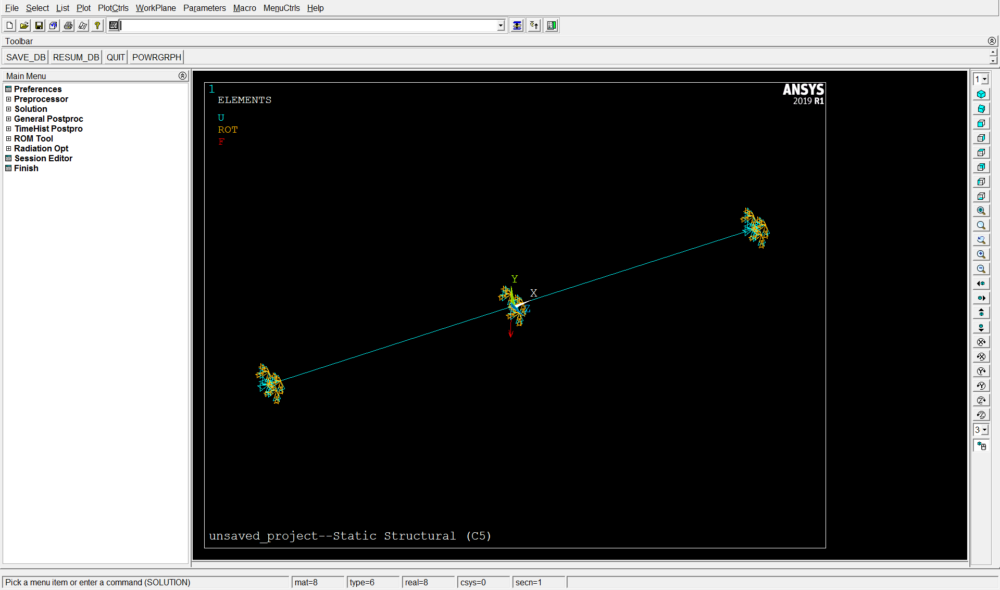
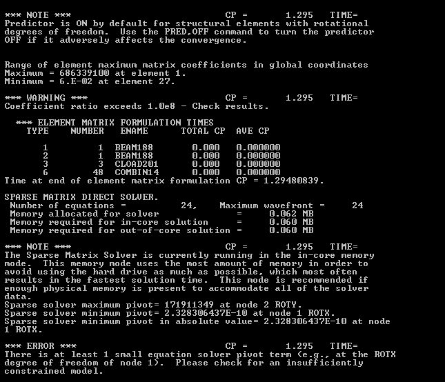
Немного покопавшись в исходных данных, заметим, что «мягкие пружины» представляют собой элементы типа COMBIN14 (рисунок 11), которые, по умолчанию, работают только в продольном направлении на «растяжение-сжатие». Так как с линейными перемещениями у нас всё в порядке и дополнительные ограничения по их направлениям нам не нужны, поменяем принцип работы «мягких пружин» (рисунок 12) и проверим, запустится ли задача в таком случае.
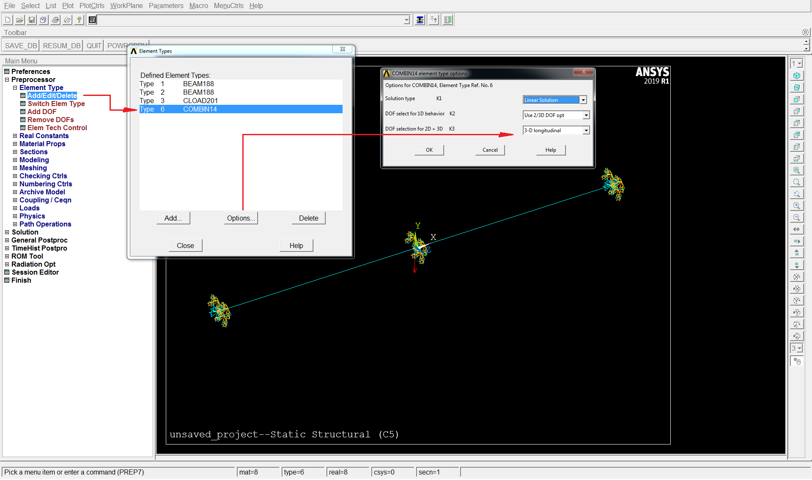
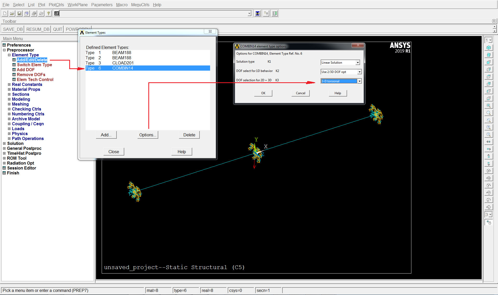
После смены «поведения» «мягких пружин» наша тестовая задача решилась без каких либо проблем, что представлено на рисунке 13. Максимальный прогиб в центре составил 0,459607 мм.
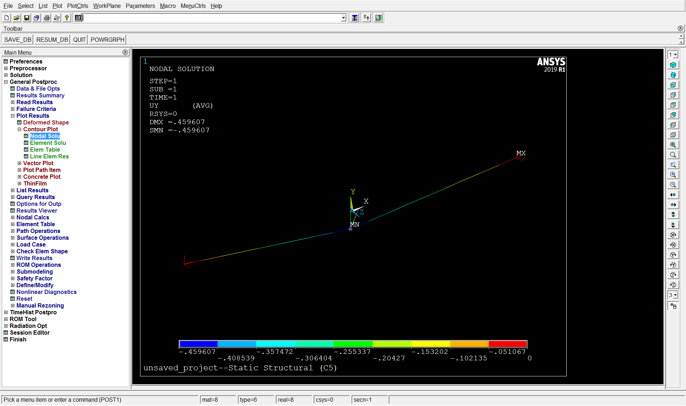
К этому моменту мы наконец-то можем сделать ещё один вывод: ANSYS при настройках по умолчанию пытается решить задачу через один из классических методов, связанных с разложением исходной матрицы \(K\). При включении опции «мягких пружин» ANSYS добавляет малые жёсткости к узлам, к которым приложены граничные условия (что соответствует выборочному добавлению малых величин к элементам матрицы жёсткости, как было рассмотрено выше). По умолчанию эти пружины соответствуют линейным перемещениям, но поскольку мы уже в явном виде ограничили перемещения в этих узлах, то они просто «вычёркиваются» из полной матрицы жёсткости и не оказывают влияния на «редуцированную» матрицу жёсткости. При смене «поведения» «мягких пружин» задача решается так же, как и в написанном ранее коде.
2.5.3 Методы, редуцирующие исходную систему
Для простоты восприятия, к разобранным в этом разделе методам можно применить следующую аналогию: в конце бурной попойки вам надлежит последовательно раздать своим 12 (как степеней свободы в балочном элементе) друзьям 1 большой пирог. Вот они все 12 перед вами выстроились. Однако один из друзей, в серединке, уже в совершенно невменяемом состоянии и портит делёжку. Поэтому вы перемещаете этого неадеквата в конец очереди, все нормальные друзья получают свой кусочек пирога, а перебравшему обрыгану вы говорите: «Сиди тихо, тебе 0».
2.5.3.1 QR-разложение
Решение системы \(K \cdot x = f\) ищется путём разложения матрицы \(K\) на две части таким образом, что \(K = Q \cdot R\), где \(Q\) – ортогональная, \(R\) – верхнетреугольная. Зачем опять что-то раскладывать? А вот зачем: после разложения исходная система \(K \cdot x = f\) преобразуется в систему \(Q \cdot R \cdot x = f\), а результат находится из решения системы \(R \cdot x = Q \cdot T \cdot f\), которая примет вид «лесенки» (так как \(R\) – верхнетреугольная). Если исходная матрица \(K\) – вырожденная, то «лишние» элементы просто откидываем и ищем решение для того, что осталось. Уже знакомая нам система имеет вид:
\[ \begin{bmatrix} 1 & 2 & 3 \\ 4 & 5 & 6 \\ 5 & 7 & 9 \end{bmatrix} \cdot x= \begin{bmatrix} 1 \\ 2 \\ 3 \end{bmatrix} \]
В результате разложения (можно опять прикинуть в маткаде) получим:
\[ Q= \begin{bmatrix} -0,154 & 0,802 & -0,577 \\ -0,617 & -0,535 & -0,577 \\ -0,772 & 0,267 & 0,577 \end{bmatrix} ,~R= \begin{bmatrix} -6,481 & -8,795 & -11,11 \\ 0 & 0,802 & 1,604 \\ 0 & 0 & 0 \end{bmatrix} \]
По числу ненулевых элементов на диагонали матрицы \(R\) делаем несложный вывод о ранге матрицы, который равен двум. Вычисляем \(Q^{T} \cdot f\):
\[ Q^{T} \cdot f = \begin{bmatrix} -0,154 & -0,617 & -0,772 \\ 0,802 & -0,535 & 0,267 \\ -0,577 & -0,577 & 0,577 \end{bmatrix} \cdot \begin{bmatrix} 1 \\ 2 \\ 3 \end{bmatrix} = \begin{bmatrix} -3,704 \\ 0,533 \\ 0 \end{bmatrix} . \]
Так как ранг равен двум, то берём первые 2 строки и первые 2 столбца и решаем систему для усечённой части \(R_{red} \cdot x = (Q^{T} \cdot f)_{red}\):
\[ \begin{bmatrix} -6,481 & -8,795 \\ 0 & 0,802 \end{bmatrix} \cdot \begin{bmatrix} x_{1} \\ x_{2} \end{bmatrix} = \begin{bmatrix} -3,704 \\ 0,533 \end{bmatrix} \]
В результате получаем:
\[ x_{red}= \begin{bmatrix} -0,331 \\ 0,665 \end{bmatrix} \]
Отбрасывание «лишних» элементов соответствует нулевому решению, и «полный» вектор \(х\) будет выглядеть как:
\[ x= \begin{bmatrix} -0,331 \\ 0,665 \\ 0 \end{bmatrix} \]
Полученное таким образом решение неплохо соотносится с решением, полученным с использованием «мягких пружин».
Применим рассмотренный подход к задаче с балкой. Нужная для этого функция будет выглядеть следующим образом:
def qr_solve(K: np.ndarray, f: np.ndarray, tol: float = 1e-10) -> NDArray:
"""
Решает систему через QR-разложение с выбором ранга.
Args:
K (np.ndarray): Матрица жёсткости (n x n).
f (np.ndarray): Вектор сил (n).
tol (float): Порог для определения ранга.
Returns:
NDArray: Решение x.
"""
# QR-разложение с поворотами
Q, R, P = linalg.qr(K, pivoting=True)
rank = sum(abs(np.diag(R)) > tol) # Определяем ранг
# Решаем усечённую систему
Qb = Q.T @ f
R_red = R[:rank, :rank]
Qb_red = Qb[:rank]
# Обратная подстановка для усечённой части
x_red = np.linalg.solve(R_red, Qb_red)
# Восстанавливаем полный вектор x с учётом перестановок
x = np.zeros(len(f))
x[P[:rank]] = x_red
return xРезультат выполнения кода с использованием этой функции применительно к задаче о шарнирно опёртой балке с неполным набором граничных условий будет выглядеть так:
Перемещения (QR): [-2.370e-19 7.596e-17 2.292e-03 -1.315e-18 4.586e-01 -1.518e-14
-7.884e-20 -3.475e-20 -1.514e-19 0.000e+00 -7.586e-17 -2.292e-03]
Прогиб u_2y (QR): 0.4586 ммСаксес!
2.5.3.2 PARDISO
PARDISO – это прямой решатель для разреженных систем вида \(K \cdot x = f\), запускаемый по умолчанию в ABAQUS, OptiStruct и ЛОГОС. PARDISO использует перестановки и для симметричных матриц – \(LDL^{T}\)-разложение, для несимметричных матриц – \(LU\)-разложение, приходя таким образом к виду:
\[ P_{L} \cdot K \cdot P_{R} = L \cdot U~{\text{(для случая с несимметричной матрицей)}}, \]
где \(P_L\) – матрица перестановки строк, \(P_R\) – матрица перестановки столбцов. После преобразований последовательно решаем несколько систем: сначала \(L \cdot y = P_L \cdot f\), потом \(U \cdot z = y\) и окончательно \(x = P_R \cdot z\). Для вырожденной матрицы таким образом можно получить некоторое частное решение, например, приравняв «лишнюю» неизвестную к нулю, аналогично решению через \(QR\)-разложение.
Поехали смотреть на нашу «тестовую» систему:
\[ \begin{bmatrix} 1 & 2 & 3 \\ 4 & 5 & 6 \\ 5 & 7 & 9 \end{bmatrix} \cdot x= \begin{bmatrix} 1 \\ 2 \\ 3 \end{bmatrix} \]
Переставляем строки (меняем местами 1-ю и 3-ю строки, как уже делали ранее), а столбцы оставляем как есть (то есть $P_R = I). Получим:
\[ P_L = \begin{bmatrix} 0 & 0 & 1 \\ 0 & 1 & 0 \\ 1 & 0 & 0 \end{bmatrix} ,~P_L \cdot K = \begin{bmatrix} 0 & 0 & 1 \\ 0 & 1 & 0 \\ 1 & 0 & 0 \end{bmatrix} \cdot \begin{bmatrix} 1 & 2 & 3 \\ 4 & 5 & 6 \\ 5 & 7 & 9 \end{bmatrix} = \begin{bmatrix} 5 & 7 & 9 \\ 4 & 5 & 6 \\ 1 & 2 & 3 \end{bmatrix} . \]
LU-разложение для матрицы даст уже знакомый результат:
\[ L = \begin{bmatrix} 1 & 0 & 0 \\ 0,8 & 1 & 0 \\ 0,2 & -1 & 1 \end{bmatrix} ,~U = \begin{bmatrix} 5 & 7 & 9 \\ 0 & -0,6 & -1,2 \\ 0 & 0 & 0 \end{bmatrix} . \]
А дальше просто топаем по алгоритму, находим \(P_L \cdot f\):
\[ P_L \cdot f = \begin{bmatrix} 0 & 0 & 1 \\ 0 & 1 & 0 \\ 1 & 0 & 0 \end{bmatrix} \cdot \begin{bmatrix} 1 \\ 2 \\ 3 \end{bmatrix} = \begin{bmatrix} 3 \\ 2 \\ 1 \end{bmatrix} \]
Решая систему \(L \cdot y = P_L \cdot f\):
\[ \begin{bmatrix} 1 & 0 & 0 \\ 0,8 & 1 & 0 \\ 0,2 & -1 & 1 \end{bmatrix} \cdot \begin{bmatrix} y_1 \\ y_2 \\ y_3 \end{bmatrix} = \begin{bmatrix} 3 \\ 2 \\ 1 \end{bmatrix} \]
Получаем следующий результат:
\[ y = \begin{bmatrix} 3 \\ -0,4 \\ 0 \end{bmatrix} \]
А решая систему \(U \cdot z = y\):
\[ \begin{bmatrix} 5 & 7 & 9 \\ 0 & -0,6 & -1,2 \\ 0 & 0 & 0 \end{bmatrix} \cdot \begin{bmatrix} z_1 \\ z_2 \\ z_3 \end{bmatrix} = \begin{bmatrix} 3 \\ -0,4 \\ 0 \end{bmatrix} \]
Получаем следующий результат (приравнивая «лишнюю» неизвестную \(z_3\) к нулю):
\[ z = \begin{bmatrix} -0,333 \\ 0,667 \\ 0 \end{bmatrix} . \]
Окончательно имеем:
\[ x = P_R \cdot z = \begin{bmatrix} -0,333 \\ 0,667 \\ 0 \end{bmatrix} . \]
Этот результат мы уже неоднократно получали ранее, он представляет собой одно из многочисленных частных решений.
Применим рассмотренный подход к задаче с балкой. Нужная для этого функция будет выглядеть следующим образом:
def pardiso_solve(K: np.ndarray, f: np.ndarray) -> NDArray:
"""
Решает Kx = f через PARDISO для симметричных матриц.
Args:
K (np.ndarray): Симметричная матрица жёсткости (n x n).
f (np.ndarray): Вектор сил (n).
Returns:
NDArray: Решение x.
"""
# Преобразуем K в разреженный формат CSR
K_sparse = csr_matrix(K)
# Решаем систему через PARDISO
try:
x = spsolve(K_sparse, f)
residual = K @ x - f
print(f"Невязка PARDISO: {np.linalg.norm(residual):.2e}")
except Exception as e:
print(f"PARDISO упал с ошибкой: {e}")
x = np.full_like(f, np.nan)
return xРезультат выполнения кода с использованием этой функции применительно к задаче о шарнирно опёртой балке с неполным набором граничных условий будет выглядеть так:
Перемещения (PARDISO): [ 0.000e+00 0.000e+00 2.292e-03 0.000e+00 4.586e-01 0.000e+00
0.000e+00 0.000e+00 4.113e-23 0.000e+00 0.000e+00 -2.292e-03]
Прогиб u_2y (PARDISO): 0.4586 ммИ опять получилась знакомая (и верная, что немаловажно) величина прогиба в 0,4586 мм.
2.5.3.3 MUMPS
Используемый по умолчанию в COMSOL решатель MUMPS (MUltifrontal Massively Parallel Sparse direct Solver) – прямой решатель, работающий с \(LU\) или \(LDL^{T}\) разложением для разреженных систем. Делает то же, что и PARDISO, но с акцентом на параллелизм и большие системы.
Вот тут то и случился у меня праздник сердца. После возни с доступными опциями оказалось, что MUMPS в зависимости от тонких настроек решателя позволяет для нашей тестовой матрицы получить неприлично большое количество частных решений (которые сведены в таблицу 2), показывающих слабую корреляцию к конкретным настройкам. Поскольку обычно эти настройки «лежат» в недосягаемом для пользователя «чёрном ящике» программного комплекса, то трудно сказать, чем должен руководствоваться пользователь при оценке адекватности полученного решения в случае с практически значимой задачей. Тейк в том, что лучше всё таки ставить полный набор граничных условий, не приводящий к «пляскам с бубном».
| ICNTL(6) | ICNTL(7) | ICNTL(8) | ICNTL(24) | \(x_1\) | \(x_2\) | \(x_3\) | Residual |
|---|---|---|---|---|---|---|---|
| 0 | 0 | 0 | 0 | 0 | 0 | 0,333 | 0 |
| 0 | 0 | 0 | 1 | 0 | 0 | 0,333 | 0 |
| 0 | 0 | 7 | 0 | -0,301 | 0,603 | 0,032 | 4,58E-16 |
| 0 | 0 | 8 | 0 | -0,203 | 0,406 | 0,130 | 5,44E-16 |
| 0 | 6 | 1 | 0 | -0,112 | 0,224 | 0,222 | 0 |
| 0 | 6 | 3 | 0 | 0,286 | -0,571 | 0,619 | 4,58E-16 |
| 0 | 6 | 4 | 0 | -0,286 | 0,571 | 0,048 | 6,66E-16 |
| 0 | 6 | 7 | 0 | -0,524 | 1,047 | -0,190 | 9,16E-16 |
| 0 | 6 | 7 | 1 | 0 | 0 | 0,333 | 6,66E-16 |
| 0 | 6 | 8 | 0 | -0,156 | 0,313 | 0,177 | 4,44E-16 |
| 2 | 0 | 0 | 0 | -0,333 | 0,667 | 0 | 0 |
| 2 | 0 | 1 | 0 | -0,622 | 1,244 | -0,289 | 4,44E-16 |
| 2 | 0 | 1 | 1 | -0,333 | 0,667 | 0 | 4,44E-16 |
| 2 | 0 | 3 | 0 | -0,067 | 0,133 | 0,267 | 0 |
| 2 | 0 | 4 | 0 | -0,167 | 0,333 | 0,167 | 4,97E-16 |
| 2 | 0 | 7 | 0 | -0,300 | 0,599 | 0,034 | 9,42E-16 |
| 2 | 0 | 8 | 0 | -0,183 | 0,366 | 0,150 | 5,44E-16 |
| 4 | 0 | 7 | 0 | -0,288 | 0,576 | 0,045 | 6,66E-16 |
| 4 | 0 | 7 | 1 | 0 | 0 | 0,333 | 8,01E-16 |
| 4 | 0 | 8 | 0 | -0,213 | 0,425 | 0,121 | 2,48E-16 |
| 4 | 6 | 3 | 0 | 0,533 | -1,067 | 0,867 | 1,12E-15 |
| 4 | 6 | 4 | 0 | -0,356 | 0,711 | -0,022 | 8,95E-16 |
| 4 | 6 | 7 | 0 | -0,053 | 0,107 | 0,280 | 0 |
| 4 | 6 | 8 | 0 | -0,780 | 1,560 | -0,446 | 2,32E-15 |
| 5 | 0 | 0 | 0 | 0,188 | -0,375 | 0,521 | 4,58E-16 |
| 5 | 0 | 1 | 0 | -0,255 | 0,509 | 0,079 | 4,58E-16 |
| 5 | 0 | 3 | 0 | 0,302 | -0,603 | 0,635 | 4,44E-16 |
| 5 | 0 | 4 | 0 | -0,133 | 0,267 | 0,200 | 2,22E-16 |
| 5 | 0 | 7 | 0 | -0,507 | 1,014 | -0,174 | 9,16E-16 |
| 5 | 0 | 8 | 0 | -0,352 | 0,704 | -0,019 | 4,44E-16 |
| 5 | 0 | 77 | 0 | -0,111 | 0,222 | 0,222 | 1,11E-16 |
| 5 | 6 | 1 | 0 | -0,189 | 0,378 | 0,144 | 4,97E-16 |
| 5 | 6 | 77 | 0 | -0,250 | 0,500 | 0,083 | 9,99E-16 |
| 6 | 0 | 77 | 0 | -0,074 | 0,148 | 0,259 | 2,22E-16 |
Применим этот подход к задаче с балкой. Нужная функция будет выглядеть следующим образом:
def mumps_solve(K: np.ndarray, f: np.ndarray) -> NDArray:
"""
Решает систему через MUMPS без стабилизации.
Args:
K (np.ndarray): Матрица жёсткости (n x n).
f (np.ndarray): Вектор сил (n).
Returns:
NDArray: Решение x.
"""
K_sparse = csr_matrix(K)
solver = DMumpsContext()
# Включаем вывод для диагностики
solver.set_icntl(1, 6) # Вывод ошибок
solver.set_icntl(3, 6) # Глобальная информация
solver.set_icntl(4, 1) # Уровень вывода (1 — только ошибки)
solver.set_icntl(7, 5) # METIS для упорядочения
solver.set_icntl(14, 100) # Максимум памяти
solver.set_icntl(24, 1) # Обнаружение вырожденности
solver.set_icntl(25, 0) # По умолчанию
f_copy = f.copy() # копируем f, чтобы не портить оригинал, а то потом хер найдёшь ошибку
solver.set_centralized_sparse(K_sparse)
solver.set_rhs(f_copy)
try:
solver.run(job=1) # Анализ
print("Анализ прошёл")
solver.run(job=2) # Факторизация
print("Факторизация прошла")
solver.run(job=3) # Решение
print("Решение найдено")
x = f_copy # f_copy теперь содержит решение
residual = K @ x - f # Считаем невязку с исходным f
print(f"Невязка MUMPS: {np.linalg.norm(residual):.2e}")
except RuntimeError as e:
print(f"MUMPS упал с ошибкой: {e}")
x = np.full_like(f, np.nan)
finally:
solver.destroy()
return xИли, если отвязаться от настроек MUMPS и выполнить часть операций вручную:
def mumps_like_lu_solve(K: np.ndarray, f: np.ndarray) -> NDArray:
"""
Решает Kx = f через LU с RCM, как MUMPS для несимметричных матриц.
Args:
K (np.ndarray): Матрица жёсткости (n x n).
f (np.ndarray): Вектор сил (n).
Returns:
NDArray: Частное решение x, совместимое с f.
"""
# Упорядочение RCM
K_sparse = csr_matrix(K)
perm = reverse_cuthill_mckee(K_sparse, symmetric_mode=True) # симметричная матрица
print(f"Перестановка perm = {perm}")
# Перестановка k_red и f_red
K_perm = K[np.ix_(perm, perm)]
f_perm = f[perm]
# LU-разложение
P, L, U = lu(K_perm)
# Прямая подстановка: L y = P F_perm
PF_perm = P @ f_perm
y = np.linalg.solve(L, PF_perm)
# Обратная подстановка U u_perm = y
n = len(U)
x_perm = np.zeros(n)
tol = 1e-10
for i in range(n-1, -1, -1):
if abs(U[i, i]) < tol:
if abs(y[i]) < tol:
x_perm[i] = 0
else:
raise ValueError(f"Система несовместима на шаге {i}")
else:
x_perm[i] = (y[i] - np.dot(U[i, i+1:], x_perm[i+1:])) / U[i, i]
# Обратная перестановка
x_red = np.zeros(n)
for i, p in enumerate(perm):
x_red[p] = x_perm[i]
return x_redРезультат выполнения кода с использованием этих функций применительно к задаче о шарнирно опёртой балке с неполным набором граничных условий будет выглядеть так:
Перемещения (MUMPS): [ 0.000e+00 0.000e+00 2.292e-03 0.000e+00 4.586e-01 0.000e+00
0.000e+00 0.000e+00 1.440e-19 0.000e+00 0.000e+00 -2.292e-03]
Прогиб u_2y (MUMPS): 0.4586 мм
Перемещения (LU): [ 0.000e+00 -0.000e+00 2.292e-03 0.000e+00 4.586e-01 0.000e+00
0.000e+00 0.000e+00 -2.028e-20 0.000e+00 0.000e+00 -2.292e-03]
Прогиб u_2y (LU): 0.4586 мм
В обоих рассмотренных случаях получилась верная величина прогиба балки 0,4586 мм.
Вывод
Какие выводы мы можем сделать из проведённых расчётов несчастной балочки с использованием прямых методов:
ANSYS и NASTRAN с настройками по умолчанию требуют задания полного набора граничных условий, позволяющего получить однозначное «честное» решение.
Применение «мягких пружин», позволяет устранить вырожденность матрицы жёсткости при неполном наборе граничных условий и получить близкое к «честному» решение (если их жёсткость и в самом деле невелика), однако стоит ясно представлять себе, что за «пружины» вы используете (как в примере с ANSYS).
Такие программные комплексы как COMSOL, ABAQUS, OptiStruct и ЛОГОС позволяют получить решение при неполном наборе граничных условий, так как заложенные алгоритмы с помощью перестановок и разложений приводят к получению некоторого частного решения. В рассмотренном случае с балкой, полученные таким образом решения, оказались достаточно близки к точному. Тем не менее, для тестовой матрицы при использовании алгоритма MUMPS был получен целый набор частных решений, в зависимости от настроек решателя, которые пользователю не всегда доступны. Таким образом, применение полного набора граничных условий, независимо от используемого алгоритма, лишает нас неопределённости при интерпретации результатов.
Хвалёный ABAQUS выдал решение, отличающееся на 7% от эталонного. Но так как в повседневной жизни я его не использую и достаю из пыльного ящика только в случае каких-то тестов для кроссверификации, и с первоначальным вопросом это расхождение имеет мало общего, то и ковырять его дальше мне лениво.
Итоговый код, реализующий все рассмотренные подходы, представлен ниже:
import numpy as np
from numpy.typing import NDArray ## Тип для массивов NumPy
from typing import Tuple, List ## Типы для подсказок, что возвращают функции
from scipy import linalg
## импорт для MUMPS-like реализации
from scipy.linalg import lu
from scipy.sparse import csr_matrix
from scipy.sparse.csgraph import reverse_cuthill_mckee
## импорт для MUMPS (е**я кочергой)
from mumps import DMumpsContext
## импорт для PARDISO
from pypardiso import spsolve # Основная функция для решения
## теперь можно и время померять
import time
from functools import wraps
def measure_time(func):
"""Декоратор для замера времени выполнения функции."""
@wraps(func)
def wrapper(*args, **kwargs):
start = time.perf_counter()
result = func(*args, **kwargs)
elapsed = time.perf_counter() - start
print("*************************************")
print("*************************************")
print(f"{func.__name__} time: {elapsed:.6f} с")
return result
return wrapper
@measure_time
def my_solve(A: np.ndarray, b: np.ndarray) -> np.ndarray:
"""
Решение системы уравнений А * х = b методом Гаусса с частичным выбором ведущего элемента
Args:
A(np.ndarray): Квадратная матрица (n x n)
b(np.ndarray): Вектор правой части (n)
Returns:
np.ndarray: Вектор решения х (n)
Raises:
ValueError: Если матрица не квадратная или вырожденная (детерминант ≈ 0)
"""
## Размер системы - число уравнений (и переменных)
n = len(b)
## Проверяем, что матрица квадратная и соответствует вектору b
if A.shape != (n, n):
raise ValueError("Матрица А должна быть квадратной и соответствовать b!")
## Копируем А и b, чтобы не менять оригиналы (работаем с копиями)
A = A.copy()
b = b.copy()
## Прямой ход: превращаем А в верхнетреугольную матрицу (нули под диагональю)
for i in range(n):
## Ищем ведущий элемент (pivot) - самый большой по модулю в столбце i...
max_idx = i ## ...начинаем с текущей строки...
for k in range(i+1, n): ## ...и смотрим все строки ниже
if abs(A[k, i]) > abs(A[max_idx, i]):
max_idx = k ## Запоминаем строку с максимальным элементом
## Проверяем, не слишком ли маленький pivot (если ≈ 0, матрица вырожденная)
pivot = A[max_idx, i]
if abs(pivot) < 1e-10: ## 1e-10 — порог для учёта ошибок округления
raise ValueError(f"Матрица вырожденна на шаге {i}!")
## Если нашли больший элемент ниже, меняем строки местами
if max_idx != i:
A[[i, max_idx]] = A[[max_idx, i]] ## Меняем строки в матрице A
b[i], b[max_idx] = b[max_idx], b[i] ## Меняем элементы в векторе b
## Делаем ведущий элемент равным 1: делим строку i на pivot
A[i, :] = A[i, :] / pivot
b[i] = b[i] / pivot
## Убираем элементы под ведущим элементом (делаем нули в столбце i)
for j in range(i + 1, n): ## Проходим по строкам ниже текущей
factor = A[j, i] ## Коэффициент, на который умножаем строку i
A[j, :] = A[j, :] - factor * A[i, :] ## Вычитаем, чтобы обнулить A[j, i]
b[j] = b[j] - factor * b[i] ## То же для правой части
## Обратный ход: решаем систему снизу вверх, начиная с последнего уравнения
x = np.zeros(n) ## Создаём вектор для хранения решения
for i in range(n-1, -1, -1): ## Идём от последней строки к первой
x[i] = b[i] ## Берём правую часть текущего уравнения
# Вычитаем все уже найденные переменные (x[j] для j > i)
for j in range(i+1, n):
x[i] = x[i] - A[i, j] * x[j] ## Учитываем влияние верхних элементов
return x
def plu_decomposition(A: np.ndarray) -> Tuple[np.ndarray, np.ndarray, np.ndarray]:
"""
Выполняет PLU-разложение матрицы A на P (перестановки), L (нижнетреугольная), U (верхнетреугольная).
Args:
A (np.ndarray): Квадратная матрица (n x n).
Returns:
Tuple[np.ndarray, np.ndarray, np.ndarray]: Матрицы P, L, U.
Raises:
ValueError: Если матрица не квадратная.
"""
n = A.shape[0]
if A.shape[0] != A.shape[1]:
raise ValueError("Матрица должна быть квадратной!")
## Копируем А
A = A.copy()
## Инициализируем P (единичная матрица), L и U
P = np.eye(n) ## Матрица перестановок начинается как единичная
L = np.zeros((n, n))
U = np.zeros((n, n))
np.fill_diagonal(L, 1) # Единицы на диагонали L
# Разложение с перестановками
for i in range(n):
# Ищем максимальный элемент в столбце i от i до конца
max_idx = i
for k in range(i + 1, n):
if abs(A[k, i]) > abs(A[max_idx, i]):
max_idx = k
# Если нужно, меняем строки в A и P
if max_idx != i:
A[[i, max_idx]] = A[[max_idx, i]]
P[[i, max_idx]] = P[[max_idx, i]]
# Исправляем L: меняем строки до i (кроме диагонали)
if i > 0:
L[[i, max_idx], :i] = L[[max_idx, i], :i]
# Заполняем U: элементы на диагонали и выше
for j in range(i, n):
U[i, j] = A[i, j] - sum(L[i, k] * U[k, j] for k in range(i))
# Заполняем L: элементы под диагональю
for j in range(i + 1, n):
if abs(U[i, i]) < 1e-10:
raise ValueError(f"Деление на ноль на шаге {i}!")
L[j, i] = (A[j, i] - sum(L[j, k] * U[k, i] for k in range(i))) / U[i, i]
return P, L, U
@measure_time
def plu_solve(A: np.ndarray, b: np.ndarray) -> np.ndarray:
"""
Решает систему A * x = b с помощью PLU-разложения.
Args:
A (np.ndarray): Квадратная матрица (n x n).
b (np.ndarray): Вектор правой части (n).
Returns:
np.ndarray: Вектор решения x (n).
"""
# Получаем P, L, U
P, L, U = plu_decomposition(A)
n = len(b)
b = b.copy()
# Применяем перестановки к b: Pb = P * b
Pb = P @ b
# Прямой ход: решаем L * y = Pb
y = np.zeros(n)
for i in range(n):
y[i] = Pb[i] - sum(L[i, j] * y[j] for j in range(i))
# Обратный ход: решаем U * x = y
x = np.zeros(n)
for i in range(n - 1, -1, -1):
if abs(U[i, i]) < 1e-10:
raise ValueError(f"Деление на ноль в U на шаге {i}!")
x[i] = (y[i] - sum(U[i, j] * x[j] for j in range(i + 1, n))) / U[i, i]
return x
@measure_time
def svd_solve(A: np.ndarray, b: np.ndarray, tol: float = 1e-10) -> Tuple[np.ndarray, np.ndarray]:
"""
Решает вырожденную систему через SVD, возвращая частное решение и базис ядра.
Args:
A (np.ndarray): Матрица (n x n).
b (np.ndarray): Вектор правой части (n).
tol (float): Порог для обрезки сингулярных значений.
Returns:
Tuple[np.ndarray, np.ndarray]: Частное решение x_p и базис ядра (столбцы).
"""
U, Sigma, Vt = np.linalg.svd(A)
n = len(b)
# Частное решение
Sigma_plus = np.zeros((n, n))
rank = 0
for i in range(n):
if Sigma[i] > tol:
Sigma_plus[i, i] = 1 / Sigma[i]
rank += 1
x_p = Vt.T @ Sigma_plus @ U.T @ b
# Базис ядра (столбцы Vt для нулевых Sigma)
kernel_basis = Vt[rank:].T # Транспонируем, чтобы столбцы были векторами
return x_p, kernel_basis
@measure_time
def tikhonov_solve(A: np.ndarray, b: np.ndarray, lambda_: float = 1e-6) -> np.ndarray:
"""
Решает вырожденную систему через регуляризацию Тихонова: (A^T A + λI) x = A^T b.
Args:
A (np.ndarray): Матрица (n x n).
b (np.ndarray): Вектор правой части (n).
lambda_ (float): Параметр регуляризации.
Returns:
np.ndarray: Решение x.
"""
n = len(b)
# Решаем уравнение с добавленной регуляризацией
return np.linalg.solve(A.T @ A + lambda_ * np.eye(n), A.T @ b)
@measure_time
def spring_solve(K: np.ndarray, f: np.ndarray, global_spring_indices: List[int], free_dofs: List[int],
epsilon_factor: float = 1e-6) -> np.ndarray:
"""
Решает систему с "мягкими пружинами" на заданных глобальных индексах, учитывая свободные степени.
Args:
K (np.ndarray): Ред. матрица жёсткости (n x n).
f (np.ndarray): Ред. вектор сил (n).
global_spring_indices (List[int]): Глобальные индексы для пружин (в K_global).
free_dofs (List[int]): Свободные степени свободы (глобальные индексы).
epsilon_factor (float): Фактор масштабирования жёсткости.
Returns:
NDArray | None: Решение x или None, если матрица сингулярна.
"""
K_stab = K.copy()
n = len(free_dofs)
# Базовая жёсткость из K_red
k_base = K[2, 2] if abs(K[2, 2]) > 1e-10 else np.mean(np.diag(K))
epsilon = epsilon_factor * k_base
# Переводим глобальные индексы в локальные для K_red
stab_indices = [free_dofs.index(idx) for idx in global_spring_indices if idx in free_dofs]
# Добавляем жёсткость только к активным индексам
for idx in stab_indices:
K_stab[idx, idx] += epsilon
# Пробуем решить с обработкой сингулярности
try:
return np.linalg.solve(K_stab, f)
except np.linalg.LinAlgError:
print(f"spring_solve: матрица сингулярна, стабилизация не помогла (активные индексы: {stab_indices})")
return None
@measure_time
def qr_solve(K: np.ndarray, f: np.ndarray, tol: float = 1e-10) -> NDArray:
"""
Решает систему через QR-разложение с выбором ранга.
Args:
K (np.ndarray): Матрица жёсткости (n x n).
f (np.ndarray): Вектор сил (n).
tol (float): Порог для определения ранга.
Returns:
NDArray: Решение x.
"""
# QR-разложение с поворотами
Q, R, P = linalg.qr(K, pivoting=True)
rank = sum(abs(np.diag(R)) > tol) # Определяем ранг
# Решаем усечённую систему
Qb = Q.T @ f
R_red = R[:rank, :rank]
Qb_red = Qb[:rank]
# Обратная подстановка для усечённой части
x_red = np.linalg.solve(R_red, Qb_red)
# Восстанавливаем полный вектор x с учётом перестановок
x = np.zeros(len(f))
x[P[:rank]] = x_red
return x
@measure_time
def eigen_solve(K: np.ndarray, f: np.ndarray, tol: float = 1e-10) -> NDArray:
"""
Решает систему через анализ собственных значений, убирая нулевые моды.
Args:
K (np.ndarray): Матрица жёсткости (n x n).
f (np.ndarray): Вектор сил (n).
tol (float): Порог для нулевых собственных значений.
Returns:
NDArray: Решение x.
"""
# Собственные значения и векторы
eigenvalues, eigenvectors = np.linalg.eigh(K)
# Определяем "жёсткие" моды
active_modes = eigenvalues > tol
Lambda_red = np.diag(eigenvalues[active_modes])
V_red = eigenvectors[:, active_modes]
# Решаем в сокращённом базисе: V_red * Lambda_red * V_red^T * x = f
f_red = V_red.T @ f
x_red = np.linalg.solve(Lambda_red, f_red)
# Восстанавливаем полное решение
x = V_red @ x_red
return x
@measure_time
def mumps_solve(K: np.ndarray, f: np.ndarray) -> NDArray:
"""
Решает систему через MUMPS без стабилизации.
Args:
K (np.ndarray): Матрица жёсткости (n x n).
f (np.ndarray): Вектор сил (n).
Returns:
NDArray: Решение x.
"""
K_sparse = csr_matrix(K)
solver = DMumpsContext()
# Включаем вывод для диагностики
solver.set_icntl(1, 6) # Вывод ошибок
solver.set_icntl(3, 6) # Глобальная информация
solver.set_icntl(4, 1) # Уровень вывода (1 — только ошибки)
solver.set_icntl(7, 5) # METIS для упорядочения
solver.set_icntl(14, 100) # Максимум памяти
solver.set_icntl(24, 1) # Обнаружение вырожденности
solver.set_icntl(25, 0) # По умолчанию
f_copy = f.copy() # копируем f, чтобы не портить оригинал, а то потом хер найдёшь ошибку
solver.set_centralized_sparse(K_sparse)
solver.set_rhs(f_copy)
try:
solver.run(job=1) # Анализ
print("Анализ прошёл")
solver.run(job=2) # Факторизация
print("Факторизация прошла")
solver.run(job=3) # Решение
print("Решение найдено")
x = f_copy # f_copy теперь содержит решение
residual = K @ x - f # Считаем невязку с исходным f
print(f"Невязка MUMPS: {np.linalg.norm(residual):.2e}")
except RuntimeError as e:
print(f"MUMPS упал с ошибкой: {e}")
x = np.full_like(f, np.nan)
finally:
solver.destroy()
return x
@measure_time
def pardiso_solve(K: np.ndarray, f: np.ndarray) -> NDArray:
"""
Решает Kx = f через PARDISO для симметричных матриц.
Args:
K (np.ndarray): Симметричная матрица жёсткости (n x n).
f (np.ndarray): Вектор сил (n).
Returns:
NDArray: Решение x.
"""
# Преобразуем K в разреженный формат CSR
K_sparse = csr_matrix(K)
# Решаем систему через PARDISO
try:
x = spsolve(K_sparse, f)
residual = K @ x - f
print(f"Невязка PARDISO: {np.linalg.norm(residual):.2e}")
except Exception as e:
print(f"PARDISO упал с ошибкой: {e}")
x = np.full_like(f, np.nan)
return x
@measure_time
def mumps_like_lu_solve(K: np.ndarray, f: np.ndarray) -> NDArray:
"""
Решает Kx = f через LDLᵀ с RCM, как MUMPS для симметричных матриц.
Args:
K (np.ndarray): Симметричная матрица жёсткости (n x n).
f (np.ndarray): Вектор сил (n).
Returns:
NDArray: Частное решение x, совместимое с f.
"""
# Упорядочение RCM
K_sparse = csr_matrix(K)
perm = reverse_cuthill_mckee(K_sparse, symmetric_mode=True) # симметричная матрица
print(f"Перестановка perm = {perm}")
# Перестановка k_red и f_red
K_perm = K[np.ix_(perm, perm)]
f_perm = f[perm]
# LU-разложение
P, L, U = lu(K_perm)
# Прямая подстановка: L y = P F_perm
PF_perm = P @ f_perm
y = np.linalg.solve(L, PF_perm)
# Обратная подстановка U u_perm = y
n = len(U)
x_perm = np.zeros(n)
tol = 1e-10
for i in range(n-1, -1, -1):
if abs(U[i, i]) < tol:
if abs(y[i]) < tol:
x_perm[i] = 0
else:
raise ValueError(f"Система несовместима на шаге {i}")
else:
x_perm[i] = (y[i] - np.dot(U[i, i+1:], x_perm[i+1:])) / U[i, i]
# Обратная перестановка
x_red = np.zeros(n)
for i, p in enumerate(perm):
x_red[p] = x_perm[i]
return x_red
class BeamStructure:
def __init__(self) -> None:
""" Исходные данные к задаче о шарнирно опёртой балке"""
self.L: float = 600.0 ## Длина, мм
self.L_e: float = self.L / 2 ## Длина элемента, мм
self.E: float = 20000.0 ## Модуль упругости, кгс/мм^2
self.G: float = 7692.31 ## Модуль сдвига, кгс/мм^2
self.A: float = 78.54 ## Площадь поперечного сечения, мм^2
self.Iz: float = 490.874 ## Момент инерции относительно оси z, мм^4
self.Iy: float = 490.874 ## Момент инерции относительно оси y, мм^4
self.J: float = 2 * self.Iz ## Полярный момент инерции, мм^4
self.k: float = 10/9 ## Коэффициент формы
self.F: float = 1.0 ## Сила, кгс
def calculate_phi(self) -> float:
""" Расчёт коэффициента Phi с учётом сдвиговой деформации"""
phi = 12 * self.E * self.Iz / (self.G * self.A * self.k * self.L_e ** 2)
return phi
def calculate_stiffness_coefficients(self, phi: float) -> Tuple[float, ...]:
""" Расчёт коэффициентов жёсткости """
k_ea = self.E * self.A / self.L_e ## Жёсткость при растяжении вдоль балки
k_gj = self.G * self.J / self.L_e ## Жёсткость при кручении
k11 = 12 * self.E * self.Iz / (self.L_e**3 * (1 + phi)) ## Жёсткость при изгибе (перемещение)
k12 = 6 * self.E * self.Iz / (self.L_e**2 * (1+phi)) ## Жёсткость при изгибе (перемещение и поворот)
k22 = (4 + phi) * self.E * self.Iz / (self.L_e * (1 + phi)) ## Жёскость при повороте на одном конце
k24 = (2 - phi) * self.E * self.Iz / (self.L_e * (1 + phi)) ## Жёсткость между поворотами на концах
return k_ea, k_gj, k11, k12, k22, k24
def build_local_stiffness_matrix(self, k_ea: float, k_gj: float, k11: float,
k12: float, k22: float, k24: float) -> NDArray:
""" Построение локальной матрицы жёсткости 12х12 """
## Создание пустой матрицы 12х12 (12 степеней свободы, 6 на каждом конце)
ke = np.zeros((12,12))
## Заполнение ненулевых элементов
## Растяжение вдоль оси балки (вдоль оси х)
ke[0, 0] = k_ea; ke[0, 6] = -k_ea; ke[6, 0] = -k_ea; ke[6, 6] = k_ea
## Изгиб в плоскости y (перемещения и повороты)
ke[1, 1] = k11; ke[1, 5] = k12; ke[1, 7] = -k11; ke[1, 11] = k12
ke[5, 1] = k12; ke[5, 5] = k22; ke[5, 7] = -k12; ke[5, 11] = k24
ke[7, 1] = -k11; ke[7, 5] = -k12; ke[7, 7] = k11; ke[7, 11] = -k12
ke[11, 1] = k12; ke[11, 5] = k24; ke[11, 7] = -k12; ke[11, 11] = k22
## Изгиб в плоскости z (перемещения и повороты)
ke[2, 2] = k11; ke[2, 4] = -k12; ke[2, 8] = -k11; ke[2, 10] = -k12
ke[4, 2] = -k12; ke[4, 4] = k22; ke[4, 8] = k12; ke[4, 10] = k24
ke[8, 2] = -k11; ke[8, 4] = k12; ke[8, 8] = k11; ke[8, 10] = k12
ke[10, 2] = -k12; ke[10, 4] = k24; ke[10, 8] = k12; ke[10, 10] = k22
## Кручение балки вокруг оси х
ke[3, 3] = k_gj; ke[3, 9] = -k_gj; ke[9, 3] = -k_gj; ke[9, 9] = k_gj
return ke
def assemble_global_matrix(self, ke: NDArray) -> NDArray:
""" Сборка глобальной матрицы жёсткости 18х18 """
## Создание пустой матрицы 18х18 (18 степеней свободы, 6 в каждом узле)
k_global = np.zeros((18, 18))
## Добавление первого элемента (первые 12 строк и столбцов)
k_global[0:12, 0:12] += ke
## Добавление второго элемента (последние 12 строк и столбцов)
k_global[6:18, 6:18] += ke
return k_global
def apply_boundary_conditions(self) -> Tuple[List[int], NDArray]:
""" Применение граничных условий и определение свободных dofs """
## Шарнирные опоры в 1 и 3 узлах
## (0 - u1x, 1 - u1y, 2 - u1z, 3 - theta1x, 12 - u3x, 13 - u3y, 14 - u3z, 15 - theta3z)
##fixed_dofs = [0, 1, 2, 3, 12, 13, 14, 15]
fixed_dofs = [0, 1, 2, 12, 13, 14]
## Свободные степени свободы (всё, что не закреплено)
free_dofs = [i for i in range(18) if i not in fixed_dofs]
## Вектор нагрузок (18 нулей, сила только по индексу 7 - u2y)
f_full = np.zeros(18)
f_full[7] = self.F ## Приложенная сила F2y
return free_dofs, f_full
def solve_system(self, k_global: NDArray, free_dofs: List[int],
f_full: NDArray) -> Tuple[NDArray, float, NDArray, float]:
""" Решение системы уравнений для перемещенеий """
## Оставляем только "свободные части" матрицы жёсткости и вектора нагрузок
k_red = k_global[np.ix_(free_dofs, free_dofs)]
f_red = f_full[free_dofs]
## Решаем систему: K * u = F, где u - вектор перемещений
## Используем собственную функцию, реализующую метод Гаусса
u_red_my = None
try:
u_red_my = my_solve(k_red, f_red)
except ValueError as e:
print(f"my_solve: система вырожденная - {e}")
## Решаем систему: K * u = F, где u - вектор перемещений
## Используем функцию из билиотеки NumPy (PLU азложение с оптимизацией)
u_red_np = None
try:
u_red_np = np.linalg.solve(k_red, f_red)
except ValueError as e:
print(f"np.linalg.solve: система вырожденная - {e}")
## Решаем систему: K * u = F, где u - вектор перемещений
## Используем собственную функцию plu_solve (PLU разложение)
u_red_plu = None
try:
u_red_plu = plu_solve(k_red, f_red)
except ValueError as e:
print(f"plu_solve: система вырожденная - {e}")
## Решаем систему: K * u = F, где u - вектор перемещений
## Используем псевдообратную матрицу через сингулярное разложение SVD
u_red_pinv = np.linalg.pinv(k_red) @ f_red
## Решаем систему: K * u = F, где u - вектор перемещений
## Находим базис ядра и частное решение через сингулярное разложение SVD
u_red_svd, kernel = svd_solve(k_red, f_red)
## Решаем систему: K * u = F, где u - вектор перемещений
# Регуляризация Тихонова
u_red_tikh = tikhonov_solve(k_red, f_red)
## Решаем систему: K * u = F, где u - вектор перемещений
## Мягкие пружины
##global_stab_indices = [0, 1, 2, 12, 13, 14] # u1x, u1y, u1z, u3x, u3y, u3z в K_global
global_stab_indices = [3, 4, 5, 15, 16, 17] # theta1x, theta1y, theta1z, theta3x, theta3y, theta3z в k_global
u_red_spring = None
try:
u_red_spring = spring_solve(k_red, f_red, global_stab_indices, free_dofs)
if u_red_spring is None: # Если сингулярна, выходим из цикла
raise np.linalg.LinAlgError("Сингулярность осталась")
except np.linalg.LinAlgError:
time_spring = 0.0
## Решаем систему: K * u = F, где u - вектор перемещений
## QR-разложение
u_red_qr = qr_solve(k_red, f_red)
## Решаем систему: K * u = F, где u - вектор перемещений
# Анализ собственных значений
u_red_eigen = eigen_solve(k_red, f_red)
## Решаем систему: K * u = F, где u - вектор перемещений
## MUMPS
u_red_mumps = mumps_solve(k_red, f_red)
## Решаем систему: K * u = F, где u - вектор перемещений
## MUMPS-like
u_red_lu = mumps_like_lu_solve(k_red, f_red)
# PARDISO
u_red_pardiso = pardiso_solve(k_red, f_red)
return u_red_my, u_red_np, u_red_plu, u_red_pinv, u_red_svd, kernel, u_red_tikh, u_red_spring, u_red_qr, \
u_red_eigen, u_red_mumps, u_red_lu, u_red_pardiso
def main() -> None:
""" Основная функция """
beam = BeamStructure()
## Вывод исходный данных
print(f"E = {beam.E:.2e} кгс/мм^2, G = {beam.G:.2e} кгс/мм^2, "
f"A = {beam.A:.2e} мм^2, Iz = {beam.Iz:.2e} мм^4, "
f"J = {beam.J:.2e} мм^4, L_e = {beam.L_e:.2e} мм")
## Расчёт промежуточных величин
phi = beam.calculate_phi()
print(f"Phi = {phi:.4f}")
k_ea, k_gj, k11, k12, k22, k24 = beam.calculate_stiffness_coefficients(phi)
print(f"k11 = {k11:.2e}, k12 = {k12:.2e}, k22 = {k22:.2e}, "
f"k24 = {k24:.2e}")
print(f"k_ea = {k_ea:.2e}, k_gj = {k_gj:.2e}")
# Построение матриц
ke = beam.build_local_stiffness_matrix(k_ea, k_gj, k11, k12, k22, k24)
k_global = beam.assemble_global_matrix(ke)
# Вывод матрицы
np.set_printoptions(precision=3)
print("Полная матрица жесткости:")
print(k_global)
# Граничные условия и решение
free_dofs, f_full = beam.apply_boundary_conditions()
print(f"Свободные степени свободы: {free_dofs}")
print(f"Вектор сил: {f_full}")
k_red = k_global[np.ix_(free_dofs, free_dofs)]
print(f"Детерминант K_red = {np.linalg.det(k_red):.2e}")
## Решаем с замерами времени ## u_red_gmres,
u_red_my, u_red_np, u_red_plu, u_red_pinv, u_red_svd, kernel, u_red_tikh, u_red_spring, u_red_qr, \
u_red_eigen, u_red_mumps, u_red_lu, u_red_pardiso = \
beam.solve_system(k_global, free_dofs, f_full)
# Вывод с проверкой на None
if u_red_my is not None:
print(f"Перемещения (my_solve): {u_red_my}")
print(f"Прогиб u_2y (my_solve): {u_red_my[free_dofs.index(7)]:.4f} мм")
else:
print("Перемещения (my_solve): не удалось вычислить из-за вырожденности")
if u_red_np is not None:
print(f"Перемещения (NumPy): {u_red_np}")
print(f"Прогиб u_2y (NumPy): {u_red_np[free_dofs.index(7)]:.4f} мм")
else:
print("Перемещения (NumPy): не удалось вычислить из-за вырожденности")
if u_red_plu is not None:
print(f"Перемещения (plu_solve): {u_red_plu}")
print(f"Прогиб u_2y (plu_solve): {u_red_plu[free_dofs.index(7)]:.4f} мм")
else:
print("Перемещения (plu_solve): не удалось вычислить из-за вырожденности")
print(f"Перемещения (псевдообратная): {u_red_pinv}")
print(f"Прогиб u_2y (псевдообратная): {u_red_pinv[free_dofs.index(7)]:.4f} мм")
print(f"Перемещения (SVD частное): {u_red_svd}")
print(f"Прогиб u_2y (SVD): {u_red_svd[free_dofs.index(7)]:.4f} мм")
print(f"Перемещения (Тихонов): {u_red_tikh}")
print(f"Прогиб u_2y (Тихонов): {u_red_tikh[free_dofs.index(7)]:.4f} мм")
if u_red_spring is not None:
print(f"Перемещения (мягкие пружины): {u_red_spring}")
print(f"Прогиб u_2y (мягкие пружины): {u_red_spring[free_dofs.index(7)]:.4f} мм")
else:
print(f"Перемещения (spring_solve) не удалось вычислить из-за вырожденности")
print(f"Перемещения (QR): {u_red_qr}")
print(f"Прогиб u_2y (QR): {u_red_qr[free_dofs.index(7)]:.4f} мм")
print(f"Перемещения (Eigen): {u_red_eigen}")
print(f"Прогиб u_2y (Eigen): {u_red_eigen[free_dofs.index(7)]:.4f} мм")
print(f"Перемещения (MUMPS): {u_red_mumps}")
print(f"Прогиб u_2y (MUMPS): {u_red_mumps[free_dofs.index(7)]:.4f} мм")
print(f"Перемещения (LU): {u_red_lu}")
print(f"Прогиб u_2y (LU): {u_red_lu[free_dofs.index(7)]:.4f} мм")
print(f"Перемещения (PARDISO): {u_red_pardiso}")
print(f"Прогиб u_2y (PARDISO): {u_red_pardiso[free_dofs.index(7)]:.4f} мм")
if __name__ == "__main__":
main()